开篇词 | 洞悉技术的本质，享受科技的乐趣
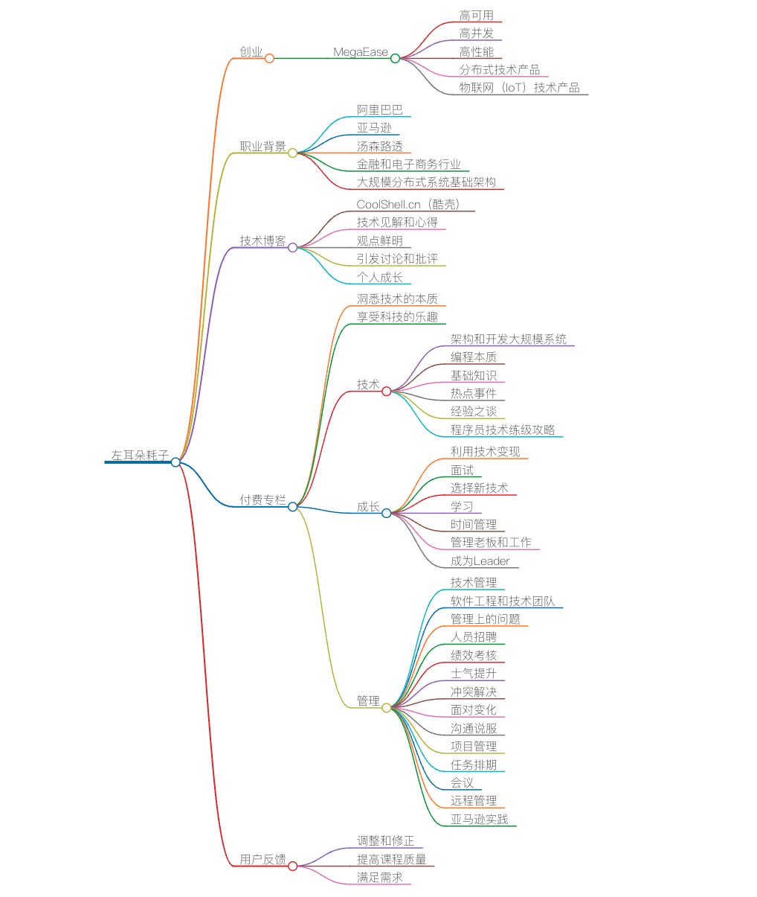
你好，我是陈皓，网名左耳朵耗子。我目前在创业，MegaEase 是我的公司，致力于为企业提供高可用、高并发、高性能的分布式技术产品，同时也提供物联网（IoT）方向的技术产品。
我之前在阿里巴巴、亚马逊、汤森路透等公司任职，职业背景是金融和电子商务行业，主要研究的技术方向是一些大规模分布式系统的基础架构。
从大学毕业一直做技术工作，到今天有 20 年了，还在写代码，因为我对技术有很大的热情。我从 2002 年开始写技术博客，到 2009 年左右开始在独立的域名 CoolShell.cn（酷壳）上分享我对技术的一些见解和心得。
本来只想记录一下，没想到得到了很多人的认可，这对我来说是一个不小的鼓励。我的文章和分享始终坚持观点鲜明的特点，因为我希望可以引发大家的讨论和批评，这样分享才更有意义。
无论我的观点是否偏激、不成熟，或者言辞犀利，在经历过大家的批评和讨论后，我都能够从中得到不在我视角内的思考和认知，这对我来说是非常重要的补充，对我的个人成长非常重要。
我相信，看到这些文章和讨论的人，也能从中收获到更多的东西。
坦率地讲，刚收到专栏撰写邀请的时候，我心里面是拒绝的。正如前面所说的，我分享的目的是跟大家交流和讨论，我认为，全年付费专栏这样的方式可能并不好。而且，付费专栏还有文章更新频率的 KPI，这对于像我这样一定要有想法才会写文章的人来说是很痛苦的，因为我不想为了写而写。
所以，最初，我是非常不情愿的。
极客邦科技的编辑跟我沟通过很多次，也问过我是否在做一些收费的咨询或是培训，并表明这个专栏就是面对这样的场景的。想想也是，我其实从 2003 年就开始为很多企业做内部的培训和分享了。
这些培训涵盖了很多方面，如软件团队管理、架构技术、编程语言、操作系统等，以及一些为企业量身定制的咨询或软件开发，这些都是收费的。
而我一直以来也没有把这些内容分享在我的博客里，主要原因是我觉得这些内容是有商业价值的，是适合收费的。它们都是实实在在的，是我多年来对实战经验的深入总结和思考，非常来之不易。
我不太舍得拿出来大范围地分享，以前基本上仅小范围地在企业内部比较封闭的环境里讲讲。所以说，我这边其实是有两种分享，一种是企业内的分享，一种则是像 CoolShell 或是大会这样的公开分享。
前者更企业化一些，后者更通俗化一些。
在这个付费专栏中，除了继续保持观点鲜明的行文风格，我会分享一些与个人或企业切身利益更为相关的内容，或者说更具指导性、更有商业价值的东西。而 CoolShell，我还会保持现有的风格继续写下去。
正如这个专栏的 Slogan 所说：“洞悉技术的本质，享受科技的乐趣”，我会在这个专栏里分享包括但不限于如下这些内容。
技术
对于技术方面，我不会写太多关于知识点的东西，因为这些知识点你可以自行 Google，可以 RTFM。我要写的一定是体系化的，而且要能直达技术的本质。入行这 20 年来，我最擅长的就是架构和开发各种大规模的系统，所以，我会有 2-3 个和分布式系统相关的系列文章。
我学过也用过好多编程语言，所以，也会有一系列的关于编程本质的文章。而我对一些基础知识研究得也比较多，所以，还会有一系列与基础知识相关的文章。
当然，其中还会穿插一些其它的技术文章，比如一些热点事件，还有一些经验之谈，包括我会把我的《程序员技术练级攻略》在这个专栏里重新再写一遍。这些东西一定会让你有醍醐灌顶的感觉。
成长
在过去这 20 年中，我感觉到，很多人都非常在意自己的成长。所以，我会分享一堆我亲身经历的，也是我自己实验的与个人发展相关的文章。
比如，如何利用技术变现、如何面试、如何选择新的技术、如何学习、如何管理自己的时间、如何管理自己的老板和工作、如何成为一个 Leader……这些东西一定会对你有用。（但是，我这里一定不会有速成的东西。一切都是要花时间和精力的。如果你想要速成，你不应该来订阅我的专栏。）
管理
这 20 年，我觉得做好技术工作的前提是，得做好技术的管理工作。只有管理好了软件工程和技术团队，技术才能发挥出最大的潜力。大多数的技术问题都是管理上的问题。
所以，我会写上一系列的和管理相关的文章，涵盖管理的三个要素：团队、项目和管理者自己。比如，人员招聘、绩效考核、提升士气、解决冲突、面对变化、沟通说服、项目管理、任务排期、会议、远程管理，等等。
这些内容都是我在外企工作时，接受到的世界顶级管理培训机构的培训内容，我会把我的实践写出来分享给你。其中一定少不了亚马逊相关的各种实践。这些东西，我和很多公司和大佬都讲过，到目前为止还没有人不赞的。
程序员如何用技术变现？（上）
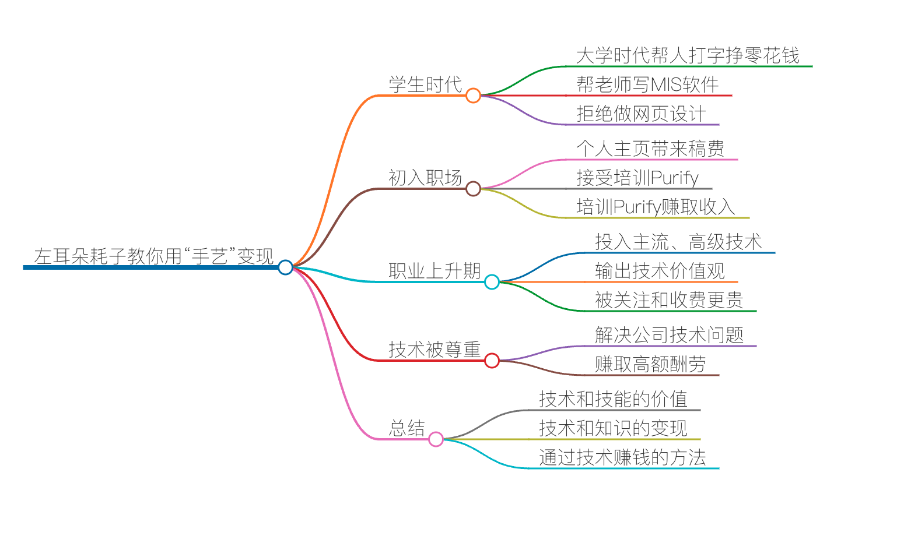 程序员用自己的技术变现，其实是一件天经地义的事儿。写程序是一门“手艺活儿”，那么作为手艺人，程序员当然可以做到靠自己的手艺和技能养活自己。
然而，现在很多手艺人程序员却说自己是“码农”，编码的农民工，在工作上被各种使唤，各种加班，累得像个牲口。在职业发展上各种迷茫和彷徨，完全看不到未来的希望，更别说可以成为一个手艺人用自己的技能变现了。
从大学时代帮人打字挣点零花钱，到逐渐通过自己的技能帮助别人，由此获得相对丰厚的收入，我在很早就意识到，从事编程这个事可以做到，完全靠自己的手艺、不依赖任何人或公司去生活的。
这对于程序员来说，本就应该是件天经地义的事，只是好像并不是所有的程序员都能意识到自己的价值。这里，我想结合我的一些经历来跟你聊聊。当然，我的经历有限，也不一定全对，只希望能给你一个参考。
学生时代
我是 1994 年上的大学，计算机科学软件专业。在 1996 年上大二的时候，因为五笔学得好打字很快，我应征到教务处帮忙，把一些文档录入到电脑里。打了三个月的字，学校按照每千字 10 元，给了我 1000 元钱。
由于我的五笔越打越快，还会用 CCED 和 WPS 排版，于是引起了别人的注意，叫我帮忙去他的打字工作室，一个月收入 400 元。我的大学是在昆明上的，这相当于那会当地收入的中上水平了。
后来，1997 年的时候，我帮一个开公司的老师写一些 MIS 软件，用 Delphi 和 PowerBuilder 写一些办公自动化和酒店管理的软件。一年后，老师给了我 2000 元钱。
因为动手能力比较强，当时系上的老师要干个什么事都让我帮忙。而且，因为当时的计算机人才太少太少了，所以一些社会上的人需要开发软件或是解决技术问题也都会到大学来。基本上老师们也都推荐给我。
还记得 1997 年老师推荐一个人来找我，问我会不会做网页？5 个静态页，10000 元钱。当时学校没教怎样做网页，我去书店找书看，结果发现书店里一本讲 HTML 的书都没有，只好回绝说“不会做”。一年后，我才发现原来这事简单得要命。
初入职场
到了 1998 年，我毕业参加工作，在工商银行网络科。由于可以拨号上网，于是我做了一个个人主页，那时超级流行个人主页或个人网站。我一边收集网上的一些知识，一边学着做些花哨的东西，比如网页上的菜单什么的。
在 2000 年时，机缘巧合我的网站被《电脑报》的编辑看到了，他写来邮件约我投稿。我就写了一些如何在网页上做菜单之类的小技术文章，每个月写个两三篇，这样每个月就有 300 元左右的稿费，当时我的月工资是 600 元。
现在通过文章标题还能找到一两篇，比如《抽屉式菜单的设计》，已经是乱码一堆了。
大学时代被人请去做事的经历对我影响很大，甚至在潜意识里完全影响了我如何规划自己的人生。虽然当时我还说不清楚，只是一种强烈的感觉——我完全可以靠自己的手艺、不依赖任何人或公司去生活。
我想这种感觉，我现在可以说清楚了，这种潜意识就是——我完全没有必要通过打工听人安排而活着，而是反过来通过在公司工作提高自己的技能，让自己可以更为独立和自由地生活。
因而，在工作当中，对于那些没什么技术含量的工作，我基本上就像是在学生时代那样交作业就好了。我想尽一切方法提高交作业的效率，比如，提高代码的重用度，能自动化的就自动化，和需求人员谈需求，简化掉需求，这样我就可以少干一些活了……
这样一来，我就可以有更多的时间，去研究公司内外那些更为核心更有技术含量的技术了。
在工作中，我总是能被别人和领导注意到，总是有比别人更多的时间去读书，去玩一些高技术含量的技术。当然，这种被“注意”，也不全然是一件好事。
2002 年，我被外包到银行里做业务开发时，因为我完成项目的速度太快，所以，没事干，整天在用户那边看书，写别的代码练手，而被用户投诉“不务正业”。我当然对这样的投诉置之不理，还是我行我素，因为我的作业已交了，所以用户也就是说说罢了。
同年，我到了一家新的很有技术含量的公司，他们在用 C 语言写一个可以把一堆 PC 机组成一个超级计算机，进行并行计算的公司项目。
当我做完第一个项目时，有个公司里的牛人和我说，你用 Purify 测试一下你的代码有没有内存问题。Purify 是以前一个叫 Rational 的公司（后来被 IBM 收购）做的一个神器，有点像 Linux 开源的 Valgrind。
用完以后，我觉得 Purify 太厉害了，于是把它的英文技术文档通读了一遍。经理看我很喜欢这个东西，就让我给公司里的人做个分享。我认真地准备了个 PPT，结果只来了一个 QA。
我在一个大会议室就对着她一个人讲了一个半小时。这个 QA 对我说，“你的分享做得真好，条理性很强，也很清楚，我学到了很多东西”。
有了这个正向反馈，我就把关于 Purify 的文章分享到了我的 CSDN 博客上，标题为《C/C++ 内存问题检查利器—Purify》。可能因为这个软件是收费的，用的人不多，这篇文章的读者反响并不大。
但是，2003 年的一天我很意外地接到了一个电话，是一个公司请我帮忙去给客户培训 Purify 这个软件。IBM 的培训太贵了，所以代理这个软件的公司为了成本问题，想找一个便宜的讲师。
他们搜遍整个中国的互联网，只看到我的这篇文章，便通过 CSDN 找到我的联系方式，给我打了电话。最终，两天的培训价格税后一共 10000 元，而我当时的月薪只有 6000 元，还是税前。
这件事儿让我在入行的时候就明白了一些道理。
- 要去经历大多数人经历不到的，要把学习时间花在那些比较难的地方。
- 要写文章就要写没有人写过的，或是别人写过，但我能写得更好的。
- 更重要的是，技术和知识完全是可以变现的。
现在回想一下，技术和知识变现这件事儿，在 15 年前我就明白了，哈哈。
随后，我在 CSDN 博客上发表了很多文章，有谈 C 语言编程修养的文章，也有一些 makefile/gdb 手册性的文章，还有在工作中遇到的各种坑。
因为我分享的东西比较系统，也是独一份，所以，搜索引擎自然是最优化的（最好的 SEO 就是独一份）。我的文章经常因为访问量大被推到 CSDN 首页。因此，引来了各种培训公司和出版社，还有一些别的公司主动发来的招聘，以及其他一些程序员想伙同创业的各种信息。
紧接着我了解到，出书作者收入太低（作者的收入有两种：一种是稿费，一页 30 元；一种是版税，也就 5% 左右），而培训公司的投入产出比明显高很多，于是我开始接一些培训的事（频率不高），一年有个七八次。当时需求比较强的培训主要是在这几个技术方面，C/C++/Java、Unix 系统编程、多层软件架构、软件测试、软件工程等。
我喜欢做企业内训，还有一个主要原因是，可以走到内部去了解各个企业在做的事和他们遇到的技术痛点，以及身在其中的工程师的想法。这极大地增加了我对社会的了解和认识。而同时，让我这个原本不善表达的技术人员，在语言组织和表达方面有了极大的提升。
其间也有一些软件开发的私活儿，但我基本全部拒绝了。最主要的原因是，这些软件开发基本上都是功能性的开发，我从中无法得到成长。而且后期会有很多维护工作，虽然一个小项目可以挣十几万，但为此花费的时间都是我人生中最宝贵的时光，得不偿失。
25~35 岁是每个人最宝贵的时光，应该用在刀刃上。
职业上升期
因为有了这些经历，我感受到了一个人知识和技能的价值。我开始把我的时间投在一些主流、高级和比较有挑战性的技术上，这可以让我保持两件事儿：一个是技术和技能的领先，二是对技术本质和趋势的敏感度。
因此，我有强烈的意愿去前沿的公司经历和学习这些东西。比如，我在汤森路透学到了人员团队管理上的各种知识和技巧，而亚马逊是让我提升最快的公司。虽说，亚马逊也有很多不好的东西，但是它的一些理念，的确让我的思维方式和思考问题的角度有了质的飞跃。
所以后来，我开始对外输出的不仅仅是技术了，还有一些技术价值观上的东西。
而从亚马逊到阿里巴巴是我在互联网行业的工作经历，这两段经历让我对这两家看似类似但内部完全不同的成功大公司，有了更为全面的了解和看法。
这两种完全不一样甚至有些矛盾的玩法让我时常在思考着，大脑里就像两个小人在掰手腕一样，这可能是我从小被灌输的“标准答案”的思维方式所致。其实，这个世界本来就没什么标准答案，或是说，一个题目本来就可以有若干个正确答案，而且这些“正确答案”还很矛盾。
于是，在我把一些价值观和思考记录下来的同时，我自然又被很多人关注到了，还吸引很多不同的思路在其中交织讨论。而从另外一方面来说，这对我来说是一个很好的补充，无论别人骂我也好，教育我也罢，他们都对我有帮助，大大地丰富了我思考问题的角度。
这些经历从质上改善了我的思考方式，让我思考技术问题的角度都随之有了一个比较大的转变。而这个转变让我有了更高的思维高度和更为开阔的视野。
可能是因为我有一些“独特”的想法，而且经历比较丰富，基础也比较扎实，使得我对技术人的认识和理解会更为透彻和深入。所以，也有了一些小名气。来找我做咨询和帮助解决问题的人越来越多，而我也开始收费收得越来越贵了。这里需要注意的是，我完全是被动收费高的。
因为父亲的身体原因，我没有办法全职，所以成了一个自由人。而也正因如此，我才得以有机会可以为更多公司解决技术问题。2015 年，有家公司的后端系统一推广就挂，性能有问题，请我去看。
我花了两天时间跟他们的工程师一起简单处理了一下，直接在生产线上重构，性能翻了 10 倍。虽然这么做有点 low，但当时完全是为了救急。公司老板很高兴，觉得他投的几百万推广费用有救了，一下给了我 10 万元。我说不用这么多的，1 万元就好了，结果他说就是这么多。我欣然接受了，当时心里有一种技术被尊重的感动。
2016 年，某个公司需要做一个高并发方案，大概需要 2000 万 QPS，但是他们只能实现到 1200 万 QPS 左右。
我花了两天时间做调研，分析性能原因，然后一天写了 700 多行代码。因为不想进入业务，所以我主要是优化了网络数据传输，让数据包尽量小，确保一个请求的响应在一个 MTU 内就传完。
测试的时候，达到了 2500 万 QPS。于是老板给了我 20 万。
这样的例子还有很多。上面的例子，我连钱都没谈就去做了，本来想着，也就最多 1 万元左右，没想到给我的酬劳大大超出了我的期望。
这里，我想说的是，并不是社会不尊重程序员，只要你能帮上大忙，就一定会赢得别人的尊重。
所以，我和一些人开玩笑说，我们可能都是在写一样的 for(int i=0; i<n; i++) 语句，但是，你写在那个地方一文不值，而我写在这个地方，这行代码就值 2000 元。不要误会，我只是想用这种“鲜明的对比方式”来加强我的观点。
上面就是我这 20 年来的经历。相信这类经历你也有过，或者你正在经历中，欢迎你也分享一下自己的经历和心得。
那么，怎样能让自己的技术被尊重？如何通过技术和技能赚钱？下节课中，我将对此做一些总结，希望对你有帮助。
程序员如何用技术变现？（下）
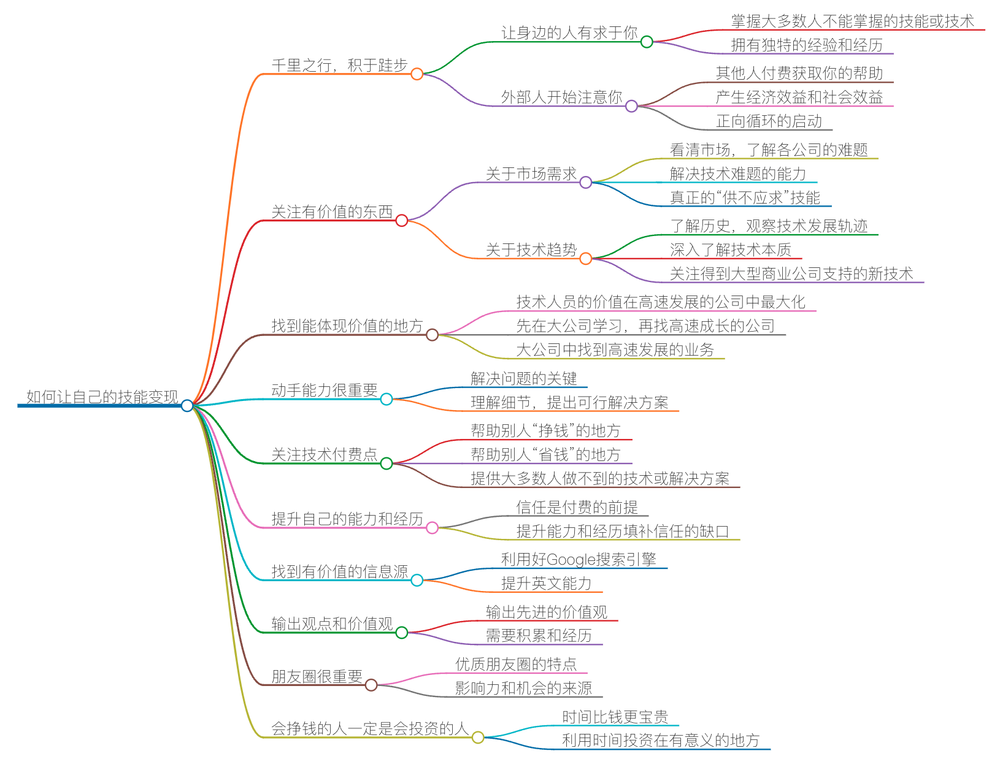
你好，我是陈皓，网名左耳朵耗子。
我不算是聪明的人，经历也不算特别成功，但一步一步走来，我认为，我能做到的，你一定也能做到，而且应该还能做得比我更好。
如何让自己的技能变现
还是那句话，本质上来说，程序员是个手艺人，有手艺的人就能做出别人做不出来的东西，而付费也是一件很自然的事了。那么，这个问题就变成如何让自己的“手艺”更为值钱的问题了。
第一，千里之行，积于跬步。任何一件成功的大事，都是通过一个一个的小成功达到的。所以，你得确保你有一个一个的小成功。
具体说来，首先，你得让自己身边的人有求于你，或是向别人推荐你。这就需要你能够掌握大多数人不能掌握的技能或技术，需要你更多地学习，并要有更多的别人没有的经验和经历。
一旦你身边的人开始有求于你，或是向别人推荐你，你就会被外部的人注意到，于是其他人就会付费来获取你的帮助。而一旦你的帮忙对别人来说有效果，那就会产生效益，无论是经济效益还是社会效益，都会为你开拓更大的空间。
你也会因为这样的正向反馈而鼓励自己去学习和钻研更多的东西，从而得到一个正向的循环。而且这个正向循环，一旦开始就停不下来了。
第二，关注有价值的东西。什么是有价值的东西？价值其实是受供需关系影响的，供大于求，就没什么价值，供不应求，就有价值。这意味着你不仅要看到市场，还要看到技术的趋势，能够分辨出什么是主流技术，什么是过渡式的技术。当你比别人有更好的嗅觉时，你就能启动得更快，也就比别人有先发优势。
- 关于市场需求。你要看清市场，就需要看看各个公司都在做什么，他们的难题是什么。简单来说，现在的每家公司无论大小都缺人。但是真的缺人吗？中国是人口大国，从不缺少写代码搬砖的人，真正缺的其实是有能力能够解决技术难题的人，能够提高团队人效的人。所以，从这些方面思考，你会知道哪些技能才是真正的“供不应求”，这样可以让你更有价值。
- 关于技术趋势。要看清技术趋势，你需要了解历史，就像一个球的运动一样，你要知道这个球未来运动的地方，是需要观察球已经完成运动的轨迹才知道的。因此，了解技术发展轨迹是一件很重要的事。要看一个新的技术是否顺应技术发展趋势，你需要将一些老技术的本质吃得很透。
因此，在学习技术的过程一定要多问自己两个问题：“一，这个技术解决什么问题？为什么别的同类技术做不到？二，为什么是这样解决的？有没有更好的方式？”另外，还有一个简单的判断方法，如果一个新的技术顺应技术发展趋势，那么在这个新的技术出现时，后面一定会有大型的商业公司支持，这类公司支持得越多，就说明你越需要关注。
第三，找到能体现价值的地方。在一家高速发展的公司中，技术人员的价值可以达到最大化。
试想，在一家大公司中，技术架构和业务已经定型，基本上没有什么太多的事可以做的。而且对于已经发展起来的大公司来说，往往稳定的重要性超过了创新。此外，大公司的高级技术人员很多，多你一个不多，少你一个不少，所以你的价值很难被体现出来。
而刚起步的公司，业务还没有跑顺，公司的主要精力会放在业务拓展上，这个时候也不太需要高精尖的技术，所以，技术人员的价值也体现不出来。
只有那些在高速发展的公司，技术人员的价值才能被最大化地体现出来。比较好的成长路径是，先进入大公司学习大公司的技术和成功的经验方法，然后再找到高速成长的公司，这样你就可以实现自己更多的价值。当然，这里并不排除在大公司中找到高速发展的业务。
第四，动手能力很重要。成为一个手艺人，动手能力是很重要的，因为在解决任何一个具体问题的时候，有没有动手能力就成为了关键。这也是我一直在写代码的原因，代码里全是细节，细节是魔鬼，只有了解了细节，你才能提出更好或是更靠谱、可以落地的解决方案。而不是一些笼统和模糊的东西。这太重要了。
第五，关注技术付费点。技术付费点基本体现在两个地方，一个是，能帮别人“挣钱”的地方；另一个是，能帮别人“省钱”的地方。也就是说，能够帮助别人更流畅地挣钱，或是能够帮助别人提高效率，能节省更多的成本，越直接越好。而且这个技术或解决方案最好还是大多数人做不到的。
第六，提升自己的能力和经历。付费的前提是信任，只有你提升自己的能力和经历后，别人才会对你有一定的信任，才会觉得你靠谱，才会给你机会。而这个信任需要用你的能力和经历来填补。比如，你是一个很知名的开源软件的核心开发人员，或者你是某知名公司核心项目的核心开发人员，等等。
第七，找到有价值的信息源。在信息社会，如果你比别人有更好的信息源，那么你就可以比别人成长得更快。对于技术人员来说，我们知道，几乎所有的技术都源自西方世界，所以，你应该走到信息的源头去。
如果你的信息来自朋友圈、微博、知乎、百度或是今日头条，那么我觉得你完蛋了。因为这些渠道有价值的信息不多，有营养的可能只有 1%，而为了这 1%，你需要读完 99% 的信息，太不划算了。
那么如何找到这些信息源呢？用好 Google 就是一个关键，比如你在 Google 搜索引擎里输入“XXX Best Practice”，或是“Best programming resource”……你就会找到很多。而用好这个更好的信息源需要你的英文能力，因此不断提升英文能力很关键。
第八，输出观点和价值观。真正伟大的公司或是产品都是要输出价值观的。只有输出了更先进的价值观，才会获得真正的影响力。但是，你要能输出观点和价值观，并不是一件容易的事，这需要你的积累和经历，而不是一朝之功。因此，如果想要让你的技能变现，这本质上是一个厚积薄发的过程。
第九，朋友圈很重要。一个人的朋友圈很重要，你在什么样的朋友圈，就会被什么样的朋友圈所影响。如果你的朋友圈比较优质，那么给你介绍过来的事儿和活儿也会好一些。
优质的朋友圈基本上都有这样的特性。
- 这些人都比较有想法、有观点，经验也比较丰富；
- 这些人涉猎的面比较广；
- 这些人都有或多或少的成功；
- 这些人都是喜欢折腾喜欢搞事的人；
- 这些人都对现状有些不满，并想做一些改变；
- 这些人都有一定的影响力。
最后有个关键的问题是，物以类聚，人以群分。如果你不做到这些，你怎么能进入到这样的朋友圈呢？
总之，就一句话，会挣钱的人一定是会投资的人。我一直认为，最宝贵的财富并不是钱，而是你的时间，时间比钱更宝贵，因为钱你不用还在那里，而时间你不用就浪费掉了。你把你的时间投资在哪些地方，就意味着你未来会走什么样的路。所以，利用好你的时间，投到一些有意义的地方吧。
我的经历有限，只能看到这些，还希望大家一起来讨论，分享你的经验和心得，也让我可以学习和提高。
Equifax信息泄露始末
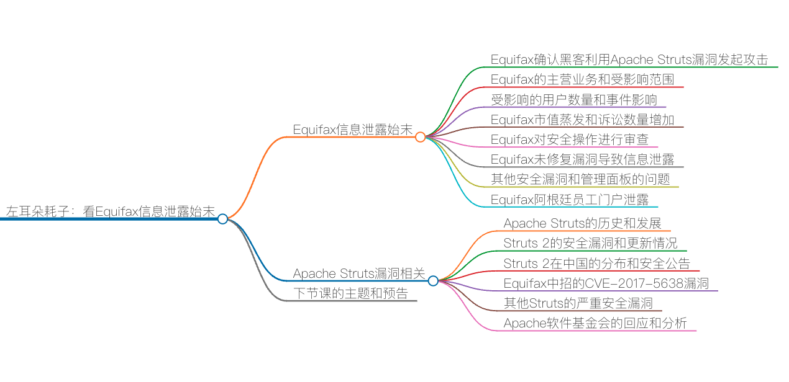
相信你一定有所耳闻，9 月份美国知名征信公司 Equifax 出现了大规模数据泄露事件，致使 1.43 亿美国用户及大量的英国和加拿大用户受到影响。今天，我就来跟你聊聊 Equifax 信息泄露始末，并对造成本次事件的原因进行简单的分析。
Equifax 信息泄露始末
Equifax 日前确认，黑客利用了其系统中未修复的 Apache Struts 漏洞（CVE-2017-5638，2017 年 3 月 6 日曝光）来发起攻击，导致了最近这次影响恶劣的大规模数据泄露事件。
作为美国三大信用报告公司中历史最悠久的一家，Equifax 的主营业务是为客户提供美国、加拿大和其他多个国家的公民信用信息。保险公司就是其服务的主要客户之一，涉及生命、汽车、火灾、医疗保险等多个方面。
此外，Equifax 还提供入职背景调查、保险理赔调查，以及针对企业的信用调查等服务。由于 Equifax 掌握了多个国家公民的信用档案，包括公民的学前和学校经历、婚姻、工作、健康、政治参与等大量隐私信息，所以这次的信息泄露，影响面积很大，而且性质特别恶劣。
受这次信息泄露影响的美国消费者有 1.43 亿左右，另估计约有 4400 万的英国客户和大量加拿大客户受到影响。事件导致 Equifax 市值瞬间蒸发掉逾 30 亿美元。
根据《华尔街日报》（The Wall Street Journal）的观察，自 Equifax 在 9 月 8 日披露黑客进入该公司部分系统以来，全美联邦法院接到的诉讼已经超过百起。针对此次事件，Equifax 首席执行官理查德·史密斯（Richard Smith）表示，公司正在对整体安全操作进行全面彻底的审查。
事件发生之初，Equifax 在声明中指出，黑客是利用了某个“U.S. website application”中的漏洞获取文件。后经调查，黑客是利用了 Apache Struts 的 CVE-2017-5638 漏洞。
戏剧性的是，该漏洞于今年 3 月份就已被披露，其危险系数定为最高分 10 分，Apache 随后发布的 Struts 2.3.32 和 2.5.10.1 版本特针对此漏洞进行了修复。而 Equifax 在漏洞公布后的两个月内都没有升级 Struts 版本，导致 5 月份黑客利用这个漏洞进行攻击，泄露其敏感数据。
事实上，除了 Apache 的漏洞，黑客还使用了一些其他手段绕过 WAF（Web 应用程序防火墙）。有些管理面板居然位于 Shodan 搜索引擎上。更让人大跌眼镜的是，据研究人员分析，Equifax 所谓的“管理面板”都没有采取任何安保措施。安全专家布莱恩·克雷布斯（Brian Krebs）在其博客中爆料，Equifax 的一个管理面板使用的用户名和密码都是“admin”。
由于管理面板能被随意访问，获取数据库密码就轻而易举了——虽然管理面板会加密数据库密码之类的东西，但是密钥却和管理面板保存在了一起。虽然是如此重要的征信机构，但 Equifax 的安全意识之弱可见一斑。
据悉，Equifax 某阿根廷员工门户也泄露了 14000 条记录，包括员工凭证和消费者投诉。本次事件发生后，好事者列举了 Equifax 系统中的一系列漏洞，包括一年以前向公司报告的未修补的跨站脚本（XSS）漏洞，更将 Equifax 推向了风口浪尖。
Apache Struts 漏洞相关
Apache Struts 是世界上最流行的 Java Web 服务器框架之一，它最初是 Jakarta 项目中的一个子项目，并在 2004 年 3 月成为 Apache 基金会的顶级项目。
Struts 通过采用 Java Servlet/JSP 技术，实现了基于 Java EE Web 应用的 MVC 设计模式的应用框架，也是当时第一个采用 MVC 模式的 Web 项目开发框架。随着技术的发展和认知的提升，Struts 的设计者意识到 Struts 的一些缺陷，于是有了重新设计的想法。
2006 年，另外一个 MVC 框架 WebWork 的设计者与 Struts 团队一起开发了新一代的 Struts 框架，它整合了 WebWork 与 Struts 的优点，同时命名为“Struts 2”，原来的 Struts 框架改名为 Struts 1。
因为两个框架都有强大的用户基础，所以 Struts 2 一发布就迅速流行开来。在 2013 年 4 月，Apache Struts 项目团队发布正式通知，宣告 Struts 1.x 开发框架结束其使命，并表示接下来官方将不会继续提供支持。自此 Apache Struts 1 框架正式退出历史舞台。
同期，Struts 社区表示他们将专注于推动 Struts 2 框架的发展。从这几年的版本发布情况来看，Struts 2 的迭代速度确实不慢，仅仅在 2017 年就发布了 9 个版本，平均一个月一个。
但从安全角度来看，Struts 2 可谓是漏洞百出，因为框架的功能基本已经健全，所以这些年 Struts 2 的更新和迭代基本也是围绕漏洞和 Bug 进行修复。仅从官方披露的安全公告中就可以看到，这些年就有 53 个漏洞预警，包括大家熟知的远程代码执行高危漏洞。
根据网络上一份未被确认的数据显示，中国的 Struts 应用分布在全球范围内排名第一，第二是美国，然后是日本，而中国没有打补丁的 Struts 的数量几乎是其他国家的总和。特别是在浙江、北京、广东、山东、四川等地，涉及教育、金融、互联网、通信等行业。
所以在今年 7 月，国家信息安全漏洞共享平台还发布过关于做好 Apache Struts 2 高危漏洞管理和应急工作的安全公告，大致意思是希望企业能够加强学习，提高安全认识，同时完善相关流程，协同自律。
而这次 Equifax 中招的漏洞编号是 CVE-2017-5638，官方披露的信息见下图。简单来说，这是一个 RCE 的远程代码执行漏洞，最初是被安恒信息的 Nike Zheng 发现的，并于 3 月 7 日上报。
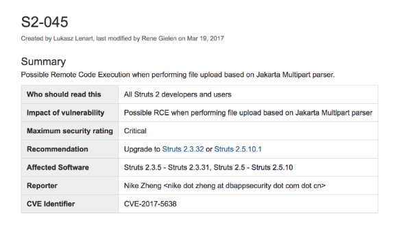
从介绍中可以看出，此次漏洞的原因是 Apache Struts 2 的 Jakarta Multipart parser 插件存在远程代码执行漏洞，攻击者可以在使用该插件上传文件时，修改 HTTP 请求头中的 Content-Type 值来触发漏洞，最后远程执行代码。
说白了，就是在 Content-Type 注入 OGNL 语言，进而执行命令。代码如下（一行 Python 命令就可以执行服务器上的 shell 命令）：
import requests
requests.get("https://target", headers={"Connection": "close", "Accept": "*/*", "User-Agent": "Mozilla/5.0", "Content-Type": "%{(#_='multipart/form-data').(#dm=@ognl.OgnlContext@DEFAULT_MEMBER_ACCESS).(#_memberAccess?(#_memberAccess=#dm):((#container=#context['com.opensymphony.xwork2.ActionContext.container']).(#ognlUtil=#container.getInstance(@com.opensymphony.xwork2.ognl.OgnlUtil@class)).(#ognlUtil.getExcludedPackageNames().clear()).(#ognlUtil.getExcludedClasses().clear()).(#context.setMemberAccess(#dm)))).(#cmd='dir').(#iswin=(@java.lang.System@getProperty('os.name').toLowerCase().contains('win'))).(#cmds=(#iswin?{'cmd.exe','/c',#cmd}:{'/bin/bash','-c',#cmd})).(#p=new java.lang.ProcessBuilder(#cmds)).(#p.redirectErrorStream(true)).(#process=#p.start()).(#ros=(@org.apache.struts2.ServletActionContext@getResponse().getOutputStream())).(@org.apache.commons.io.IOUtils@copy(#process.getInputStream(),#ros)).(#ros.flush())}"})
在 GitHub 上有相关的代码，链接为：https://github.com/mazen160/struts-pwn 或 https://github.com/xsscx/cve-2017-5638
注入点是在 JakartaMultiPartRequest.java 的 buildErrorMessage 函数中，这个函数里的 localizedTextUtil.findText 会执行 OGNL 表达式，从而导致命令执行（注：可以参看 Struts 两个版本的补丁“2.5.10.1 版补丁”“2.3.32 版补丁”），使客户受到影响。
因为默认情况下 Jakarta 是启用的，所以该漏洞的影响范围甚广。当时官方给出的解决方案是尽快升级到不受影响的版本，看来 Equifax 的同学并没有注意到，或者也没有认识到它的严重性。
另外，在 9 月 5 日和 7 日，Struts 官方又接连发布了几个严重级别的安全漏洞公告，分别是 CVE-2017-9804、CVE-2017-9805、CVE-2017-9793 和 CVE-2017-12611。
这里面最容易被利用的当属 CVE-2017-9805，它是由国外安全研究组织 lgtm.com 的安全研究人员发现的又一个远程代码执行漏洞。漏洞原因是 Struts 2 REST 插件使用带有 XStream 程序的 XStream Handler 进行未经任何代码过滤的反序列化操作，所以在反序列化 XML payloads 时就可能导致远程代码执行。
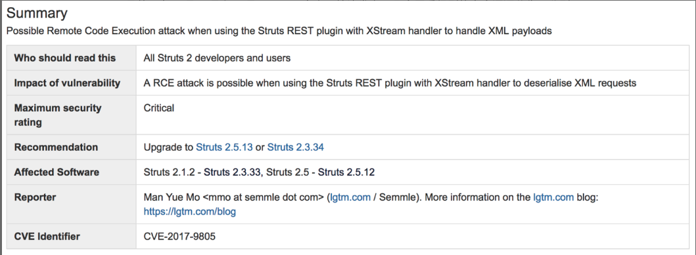
不过在 Apache 软件基金会的项目管理委员会的回应文章中，官方也对事故原因进行了分析和讨论。首先，依然不能确定泄露的源头是 Struts 的漏洞导致的。其次，如果确实是源于 Struts 的漏洞，那么原因“或是 Equifax 服务器未打补丁，使得一些更早期公布的漏洞被攻击者利用，或者是攻击者利用了一个目前尚未被发现的漏洞”。
根据推测，该声明提出黑客所使用的软件漏洞可能就是 CVE-2017-9805 漏洞，该漏洞虽然是在 9 月 4 日才由官方正式公布，但早在 7 月时就有人公布在网络上了，并且这个漏洞的存在已有 9 年。
相信通过今天的分享，你一定对 Equifax 的数据泄露始末及造成原因有了清楚的了解。欢迎把你的收获和想法，分享给我。下节课中，我们将回顾一下互联网时代的其他大规模数据泄露事件，并结合这些事件给出应对方案和技术手段。
从Equifax信息泄露看数据安全
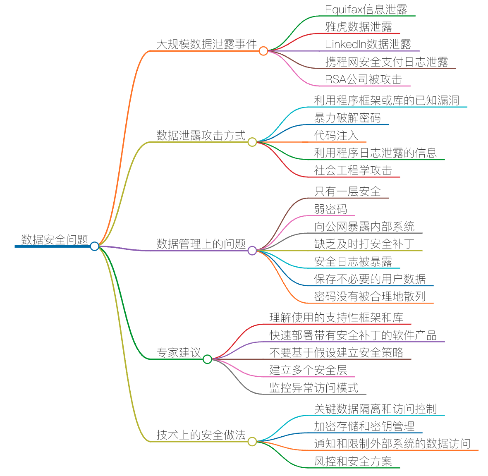
上节课中，我们讲了 Equifax 信息泄露始末，并对造成此次事件的漏洞进行了分析。今天，我们就来回顾一下互联网时代的其他几次大规模数据泄露事件，分析背后的原因，给出解决这类安全问题的技术手段和方法。
数据泄露介绍以及历史回顾
类似于 Equifax 这样的大规模数据泄露事件在互联网时代时不时地会发生。上一次如此大规模的数据泄露事件主角应该是雅虎。
继 2013 年大规模数据泄露之后，雅虎在 2014 年又遭遇攻击，泄露出 5 亿用户的密码，直到 2016 年有人在黑市公开交易这些数据时才为大众所知。雅虎股价在事件爆出的第二天就下跌了 2.4%。而此次 Equifax 的股价下跌超过 30%，市值缩水约 53 亿。这让各大企业不得不警惕。
类似的，LinkedIn 在 2012 年也泄露了 6500 万用户名和密码。事件发生后，LinkedIn 为了亡羊补牢，及时阻止被黑账户的登录，强制被黑用户修改密码，并改进了登录措施，从单步认证增强为带短信验证的两步认证。
类似的，LinkedIn 在 2012 年也泄露了 6500 万用户名和密码。事件发生后，LinkedIn 为了亡羊补牢，及时阻止被黑账户的登录，强制被黑用户修改密码，并改进了登录措施，从单步认证增强为带短信验证的两步认证。
国内也有类似的事件。2014 年携程网安全支付日志存在漏洞，导致大量用户信息如姓名、身份证号、银行卡类别、银行卡号、银行卡 CVV 码等信息泄露。这意味着，一旦这些信息被黑客窃取，在网络上盗刷银行卡消费将易如反掌。
如果说网络运维安全是一道防线，那么社会工程学攻击则可能攻破另一道防线——人。2011 年，RSA 公司声称他们被一种复杂的网络攻击所侵害，起因是有两个小组的员工收到一些钓鱼邮件。邮件的附件是带有恶意代码的 Excel 文件。
当一个 RSA 员工打开该 Excel 文件时，恶意代码攻破了 Adobe Flash 中的一个漏洞。该漏洞让黑客能用 Poison Ivy 远程管理工具来取得对机器的管理权，并访问 RSA 内网中的服务器。这次攻击主要威胁的是 SecurID 系统，最终导致了其母公司 EMC 花费 6630 万美元来调查、加固系统，并最终召回和重新分发了 30000 家企业客户的 SecurID 卡片。
数据泄露攻击
以这些公司为例，我们来看看这些攻击是怎样实现的。
- 利用程序框架或库的已知漏洞。比如这次 Equifax 被攻击，就是通过 Apache Struts 的已知漏洞。RSA 被攻击，也利用了 Adobe Flash 的已知漏洞。还有之前的“心脏流血”也是使用了 OpenSSL 的漏洞……
- 暴力破解密码。利用密码字典库或是已经泄露的密码来“撞库”。
- 代码注入。通过程序员代码的安全性问题，如 SQL 注入、XSS 攻击、CSRF 攻击等取得用户的权限。
- 利用程序日志不小心泄露的信息。携程的信息泄露就是本不应该能被读取的日志没有权限保护被读到了。
- 社会工程学。RSA 被攻击，第一道防线是人——RSA 的员工。只有员工的安全意识增强了，才能抵御此类攻击。其它的如钓鱼攻击也属于此类。
然后，除了表面的攻击之外，窃取到的信息也显示了一些数据管理上的问题。
- 只有一层安全。Equifax 只是被黑客攻破了管理面板和数据库，就造成了数据泄露。显然这样只有一层安全防护是不够的。
- 弱密码。Equifax 数据泄露事件绝对是管理问题。至少，密码系统应该不能让用户设置如此简单的密码，而且还要定期更换。最好的方式是通过数据证书、VPN、双因子验证的方式来登录。
- 向公网暴露了内部系统。在公司网络管理上出现了非常严重的问题。
- 对系统及时打安全补丁。监控业内的安全漏洞事件，及时作出响应，这是任何一个有高价值数据的公司都需要干的事。
- 安全日志被暴露。安全日志往往包含大量信息，被暴露是非常危险的。携程的 CVV 泄露就是从日志中被读到的。
- 保存了不必要保存的用户数据。携程保存了用户的信用卡号、有效期、姓名和 CVV 码，这些信息足以让人在网上盗刷信用卡。其实对于临时支付来说，这些信息完全可以不保存在磁盘上，临时在内存中处理完毕立即销毁，是最安全的做法。即便是快捷支付，也没有必要保存 CVV 码。安全日志也没有必要将所有信息都保存下来，比如可以只保存卡号后四位，也同样可以用于处理程序故障。
- 密码没有被合理地散列。以现代的安全观念来说，以明文方式保存密码是很不专业的做法。进一步的是只保存密码的散列值（用安全散列算法），LinkedIn 就是这样做的。但是，散列一则需要用目前公认安全的算法（比如 SHA-2 256），而已知被攻破的算法则最好不要使用（如 MD5，能人为找到碰撞，对密码验证来说问题不大），二则要加一个安全随机数作为盐（salt）。LinkedIn 的问题正在于没有加盐，导致密码可以通过预先计算的彩虹表（rainbow table）反查出明文。这些密码明文可以用来做什么事，就不好说了，撞库什么的都有可能了。对用户来说，最好是不同网站用不同密码。
专家建议
Contrast Security 是一家安全公司，其 CTO 杰夫·威廉姆斯（ Jeff Williams）在博客中表示，虽说最佳实践是确保不使用有漏洞的程序库，但是在现实中并不容易做到这一点，因为安全更新来得比较频繁。
“经常，为了做这些安全性方面的更改，需要重新编写、测试和部署整个应用程序，而整个周期可能要花费几个月。我最近和几个大的组织机构聊过，他们在应对 CVE-2017-5638 这件事上花了至少四个月的时间。即便是在运营得最好的组织机构中，也经常在漏洞被发布和应用程序被更新之间有几个月的时间差。”威廉姆斯写道。
Apache Struts 的副总裁雷内·吉伦（René Gielen）在 Apache 软件基金会的官方博客中写道，为了避免被攻击，对于使用了开源或闭源的支持性程序库的软件产品或服务，建议如下的 5 条最佳实践。
- 理解你的软件产品中使用了哪些支持性框架和库，它们的版本号分别是多少。时刻跟踪影响这些产品和版本的最新安全性声明。
- 建立一个流程，来快速地部署带有安全补丁的软件产品发布版，这样一旦需要因为安全方面的原因而更新支持性框架或库，就可以快速地发布。最好能在几个小时或几天内完成，而不是几周或几个月。我们发现，绝大多数被攻破的情况是因为几个月或几年都没有更新有漏洞的软件组件而引起的。
- 所有复杂的软件都有漏洞。不要基于“支持性软件产品没有安全性漏洞”这样的假设来建立安全策略。
- 建立多个安全层。在一个面向公网的表示层（比如 Apache Struts 框架）后面建立多级有安全防护的层次，是一种良好的软件工程实践。就算表示层被攻破，也不会直接提供出重要（或所有）后台信息资源的访问权。
- 针对公网资源，建立对异常访问模式的监控机制。现在有很多侦测这些行为模式的开源和商业化产品，一旦发现异常访问就能发出警报。作为一种良好的运维实践，我们建议针对关键业务的网页服务应用一定要有这些监控机制。
在吉伦提的第二点中说到，理想的更新时间是在几个小时到几天。我们知道，作为企业，部署了一个版本的程序库，在更新前需要在测试系统上测试各个业务模块，确保兼容以后才能上线。否则，盲目上线一个新版本，一旦遇到不兼容的情况，业务会部分或全部停滞，给客户留下不良印象，经济损失将是不可避免的。因此，这个更新周期必须通过软件工程手段来保证。
一个有力的解决方案是自动化测试。对以数据库为基础的程序库，设置专门的、初始时全空的测试用数据库来进行 API 级别的测试。对于 UI 框架，使用 UI 自动化测试工具进行自动化测试。测试在原则上必须覆盖上层业务模块所有需要的功能，并对其兼容性加以验证。业务模块要连同程序库一起做集成的自动化测试，同时也要有单元测试。
升级前的人工测试也有必要，但由于安全性更新的紧迫性，覆盖主要和重要路径即可。
如果测试发现不兼容性，无法立即升级，那么要考虑的第二点是缓解措施（mitigation）。比如，能否禁用有漏洞的部分而不影响业务？如果不可行，那么是否可以通过 WAF 的设置来把一定特征的攻击载荷挡在门外？这些都是临时解决方案，要到开发部门把业务程序更新为能用新版本库，才能上线新版本的应用程序。
技术上的安全做法
除了上面所说的，那些安全防范的方法，我想在这里再加入一些我自己的经验。
从技术上来说，安全防范最好是做到连自己内部员工都能防，因为无论是程序的 BUG 还是漏洞，都是为了取得系统的权限而获得数据。如果我们连内部人都能防的话，那么就可以不用担心绝大多数的系统漏洞了。所谓“家贼难防”，如果要做到这一点，一般来说，有如下的一些方式。
首先，我们需要把我们的关键数据定义出来，然后把这些关键数据隔离出来，隔离到一个安全级别非常高的地方。所谓安全级别非常高的地方，即这个地方需要有各种如安全审计、安全监控、安全访问的区域。
一般来说，在这个区域内，这些敏感数据只入不出。通过提供服务接口来让别的系统只能在这个区域内操作这些数据，而不是把数据传出去，让别的系统在外部来操作这些数据。
举个例子，用户的手机号是敏感信息。如果有外部系统需要使用手机号，一般来说是想发个短信，那么我们这个掌管手机号数据的系统就对外提供发短信的功能，而外部系统通过 UID 或是别的抽象字段来调用这个系统的发短信的 API。信用卡也一样，提供信用卡的扣款 API 而不是把卡号返回给外部系统。
另外，如果业务必须返回用户的数据，一般来说，最终用户可能需要读取自己的数据，那么，对于像信用卡这样的关键数据是死也不能返回全部数据的，只能返回一个被“马赛克”了的数据（隐藏掉部分信息）。就算需要返回一些数据（如用户的地址），那么也需要在传输层上加密返回。
而用户加密的算法一定要采用非对称加密的方式，而且还要加上密钥的自动化更换，比如：在外部系统调用 100 次或是第一个小时后就自动更换加密的密钥。这样，整个系统在运行时就完全是自动化的了，而就算黑客得到了密钥，密匙也会过期，这样可以控制泄露范围。
通过上述手段，我们可以把数据控制在一个比较小的区域内。
而在这个区域内，我们依然会有相关的内部员工可以访问，因此，这个区域中的数据也是需要加密存放的，而加密使用的密钥则需要放在另外一个区域中。
也就是说，被加密的数据和用于加密的密钥是由不同的人来管理的，有密钥的人没有数据，有数据的人没有密钥，这两拨人可以有访问自己系统的权限，但是没有访问对方系统的权限。这样可以让这两拨人互相审计，互相牵制，从而提高数据的安全性。比如，这两拨人是不同公司的。
而密钥一定要做到随机生成，最好是对于不同用户的数据有不同的密钥，并且时不时地就能自动化更新一下，这样就可以做到内部防范。注明一下，按道理来说，用户自己的私钥应该由用户自己来保管，而公司的系统是不存的。而用户需要更新密钥时，需要对用户做身份鉴别，可以通过双因子认证，也可以通过更为严格的物理身份验证。例如，到银行柜台拿身份证重置密码。
最后，每当这些关键信息传到外部系统，需要做通知，最好是通知用户和自己的管理员。并且限制外部系统的数据访问量，超过访问量后，需要报警或是拒绝访问。
上述的这些技术手段是比较常见的做法，虽然也不能确保 100% 防止住，但基本上来说已经将安全级别提得非常高了。
不管怎么样，安全在今天是一个非常严肃的事，能做到绝对的安全基本上是不可能的，我们只能不断提高黑客入侵的门槛。当黑客的投入和收益大大不相符时，黑客也就失去了入侵的意义。
此外，安全还在于“风控”，任何系统就算你做得再完美，也会出现数据泄露的情况，只是我们可以把数据泄露的范围控制在一个什么样的比例，而这个比例就是我们的“风控”。
所谓的安全方案基本上来说就是能够把这个风险控制在一个很小的范围。对于在这个很小范围内出现的一些数据安全的泄露，我们可以通过“风控基金”来做业务上的补偿，比如赔偿用户损失，等等。因为从经济利益上来说，如果风险可以控制在一个——我防范它的成本远高于我赔偿它的成本，那么，还不如赔偿了。
何为技术领导力？
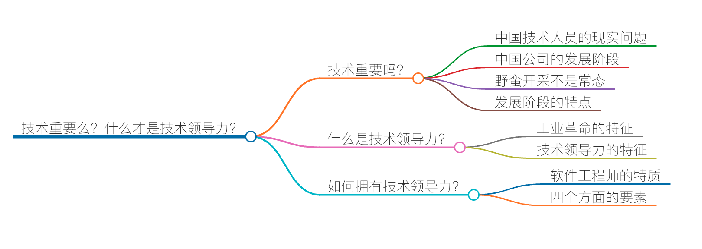
我先说明一下，我们要谈的并不是“如何成为一名管理者”。我想谈的是技术上的领先，技术上的优势，而不是一个职称，一个人事组织者。另外，我不想在理论上泛泛而谈这个事，我想谈得更落地、更实际一些，所以，我需要直面一些问题。
首先，要考虑的问题是——做技术有没有前途？我们在很多场合都能听到：技术做不长，技术无用商业才有用等这样的言论。所以，在谈技术领导力前，我需要直面这个问题，否则，技术领导力就成为一个伪命题了。
技术重要吗？
在中国，程序员把自己称作“码农”，说自己是编程的农民工，干的都是体力活，加班很严重，认为做技术没有什么前途，好多人都拼命地想转管理或是转行。这是中国技术人员的一个现实问题。
与国外相比，似乎中国的程序员在生存上遇到的问题更多。为什么会有这样的问题？我是这么理解的，在中国，需要解决的问题很多，而且人口众多。也就是说，中国目前处于加速发展中，遍地机会，公司可以通过“野蛮开采”来实现自身业务的快速拓展和扩张。而西方发达国家人口少一些，相对成熟一些，竞争比较激烈，所以，更多的是采用“精耕细作”的方式。
此外，中国的基础技术还正在发展中，技术能力不足，所以，目前的状态下，销售、运营、地推等简单快速的业务手段显得更为有效一些，需要比拼的是如何拿到更多的“地”。而西方的“精耕细作”需要比拼的是在同样大小的一块田里，如何才能更快更多地种出“粮食”，这完全就是在拼技术了。
每个民族、国家、公司和个人都有自己的发展过程。而总体上来说，中国公司目前还处于“野蛮开采”阶段，所以，这就是为什么很多公司为了快速扩张，要获得更多的用户和市场 ，需要通过加班、加人、烧钱、并购、广告、运营、销售等这些相对比较“野蛮”的方式发展自己，而导致技术人员在其中跟从和被驱动。这也是为什么很多中国公司要用“狼性”、要用“加班”、要用“打鸡血”来驱动员工完成更多的工作。
但是，这会成为常态吗？中国和中国的公司会这样一直走下去吗？我并不觉得。
这就好像人类的发展史一样。在人类发展的初期，蛮荒民族通过野蛮的掠夺来发展自己的民族更为有效，但我们知道资源是有限的，一旦没有太多可以掠夺的资源，就需要发展“自给自主”的能力，这就是所谓的“发展文明”。所以，我们也能看到，一些比较“文明”的民族在初期搞不过“野蛮”的民族，但是，一旦“文明”发展起来，就可以从质上完全超过“野蛮”民族。
从人类历史的发展规律中，我们可以看到，各民族基本都是通过“野蛮开采”来获得原始积累，然后有一些民族开始通过这些原始积累发展自己的“文明”，从而达到强大，吞并弱小的民族。
所以，对于一个想要发展、想要变强大的民族或公司来说，野蛮开采绝不会是常态，否则，只能赢得一时，长期来说，一定会被那些掌握先进技术的民族或公司所淘汰。
从人类社会的发展过程中来看，基本上可以总结为几个发展阶段。
- 第一个阶段：野蛮开采。这个阶段的主要特点是资源过多，只需要开采就好了。
- 第二个阶段：资源整合。在这个阶段，资源已经被不同的人给占有了，但是需要对资源整合优化，提高利用率。这时通过管理手段就能实现。
- 第三个阶段：精耕细作。这个阶段基本上是对第二阶段的精细化运作，并且通过科学的手段来达到。
- 第四个阶段：发明创造。在这个阶段，人们利用已有不足的资源来创造更好的资源，并替代已有的马上要枯竭的资源。这就需要采用高科技来达到了。
这也是为什么像亚马逊、Facebook 这样的公司，最终都会去发展自己的核心技术，提高自己的技术领导力，从早期的业务型公司转变成为技术型公司的原因。那些本来技术很好的公司，比如雅虎、百度，在发展到一定程度时，将自己定位成了一个广告公司，然后开始变味、走下坡路。
同样，谷歌当年举公司之力不做技术做社交也是一个失败的案例。还好拉里·佩奇（Larry Page）看到苗头不对，重新掌权，把产品经理全部移到一边，让工程师重新掌权，于是才有了无人车和 AlphaGo 这样真正能够影响人类未来的惊世之作。
微软在某段时间由一个做电视购物的销售担任 CEO，也出现了技术领导力不足的情况，导致公司走下坡路。苹果公司，在聘任了一个非技术的 CEO 后也几近破产。
尊重技术的公司和不尊重技术的公司在初期可能还不能显现，而长期来看，差距就很明显了。
所以，无论是一个国家，一个公司，还是一个人，在今天这样技术浪潮一浪高过一浪的形势下，拥有技术不是问题，而问题是有没有拥有技术领导力。
说得直白一点，技术领导力就是，你还在用大刀长矛打仗的时候，对方已经用上了洋枪大炮；你还在赶马车的时候，对方已经开上了汽车……
什么是技术领导力？
但是，这么说还是很模糊，还是不能清楚地说明什么是技术领导力。我认为，技术领导力不仅仅是呈现出来的技术，而是一种可以获得绝对优势的技术能力。所以，技术领导力也有一些特征，为了说清楚这些特征，先让我们来看一下人类历史上的几次工业革命。
第一次工业革命。第一次工业革命开始于 18 世纪 60 年代，一直持续到 19 世纪 30 年代至 40 年代。在这段时间里，人类生产逐渐转向新的制造过程，出现了以机器取代人力、兽力的趋势，以大规模的工厂生产取代个体工厂手工生产的一场生产与科技革命。由于机器的发明及运用成为了这个时代的标志，因此历史学家称这个时代为机器时代（the Age of Machines）。
这个时期的标志技术是——“蒸汽机”。在瓦特改良蒸汽机之前，生产所需的动力依靠人力、畜力、水力和风力。伴随蒸汽机的发明和改进，工厂不再依河或溪流而建，很多以前依赖人力与手工完成的工作逐渐被机械化生产取代。世界被推向了一个崭新的“蒸汽时代”。
第二次工业革命。第二次工业革命指的是 1870 年至 1914 年期间的工业革命。英国、德国、法国、丹麦和美国以及 1870 年后的日本，在这段时间里，工业得到飞速发展。第二次工业革命紧跟着 18 世纪末的第一次工业革命，并且从英国向西欧和北美蔓延。
第三次工业革命。第三次工业革命又名信息技术革命或者数字化革命，指第二次世界大战后，因计算机和电子数据的普及和推广而在各行各业发生的从机械和模拟电路再到数字电路的变革。第三次技术革命使传统工业更加机械化、自动化。它降低了工作成本，彻底改变了整个社会的运作模式，也创造了电脑工业这一高科技产业。
它是人类历史上规模最大、影响最深远的科技革命，至今仍未结束。主要技术是“计算机”。计算机的发明是人类智力发展道路上的里程碑，因为它可以代替人类进行一部分脑力活动。
而且，我们还可以看到，科学技术推动生产力的发展，转化为直接生产力的速度在加快。而科学技术密切结合，相互促进，在各个领域相互渗透。
近代这几百年的人类发展史，从蒸汽机时代，到电力时代，再到信息时代，我们可以看到这样的一些信息。
- 关键技术。蒸汽机、电、化工、原子能、炼钢、计算机，如果只看这些东西的话，似乎没什么用。但这些核心技术的突破，可以让我们建造很多更牛的工具，而这些工具能让人类干出以前干不出来的事。
- 自动化。这其中最重要的事就是自动化。三次革命中最重要的事就是用机器来自动化。通信、交通、军事、教育、金融等各个领域都是在拼命地自动化，以提高效率——用更低的成本来完成更多的事。
- 解放生产力。把人从劳动密集型的工作中解放出来，去做更高层次的知识密集型的工作。说得难听一点，就是取代人类，让人失业。值得注意的是，今天的 AI 在开始取代人类的知识密集型的工作……
因此，我们可以看到的技术领导力是：
- 尊重技术，追求核心基础技术。
- 追逐自动化的高效率的工具和技术，同时避免无效率的组织架构和管理。
- 解放生产力，追逐人效的提高。
- 开发抽象和高质量的可以重用的技术组件。
- 坚持高于社会主流的技术标准和要求。
如何拥有技术领导力？
前面这些说得比较宏大，并不是所有的人都可以发明或创造这样的核心技术，但这不妨碍我们拥有技术领导力。因为，我认为，这世界的技术有两种，一种是像从马车时代到汽车时代这样的技术，也就是汽车的关键技术——引擎，另一种则是工程方面的技术，而工程技术是如何让汽车更安全更有效率地行驶。对于后者来说，我觉得所有的工程师都有机会。
那么作为一个软件工程师怎样才算是拥有“技术领导力”呢？我个人认为，是有下面的这些特质。
- 能够发现问题。能够发现现有方案的问题。
- 能够提供解决问题的思路和方案，并能比较这些方案的优缺点。
- 能够做出正确的技术决定。用什么样的技术、什么解决方案、怎样实现来完成一个项目。
- 能够用更优雅，更简单，更容易的方式来解决问题。
- 能够提高代码或软件的扩展性、重用性和可维护性。
- 能够用正确的方式管理团队。所谓正确的方式，一方面是，让正确的人做正确的事，并发挥每个人的潜力；另一方面是，可以提高团队的生产力和人效，找到最有价值的需求，用最少的成本实现之。并且，可以不断地提高自身和团队的标准
- 创新能力。能够使用新的方法新的方式解决问题，追逐新的工具和技术。
我们可以看到，要做到这些其实并不容易，尤其，在面对不同问题的时候，这些能力也会因此不同。但是，我们不难发现，在任何一个团队中，大多数人都是在提问题，而只有少数人在回答这些人的问题，或是在提供解决问题的思路和方案。
是的，一句话，总是在提供解决问题的思路和方案的人才是有技术领导力的人。
那么，作为一个软件工程师，我们怎么让自己拥有技术领导力呢？总体来说，是四个方面，具体如下：
- 扎实的基础技术；
- 非同一般的学习能力；
- 坚持做正确的事；
- 不断提高对自己的要求标准；
好了。今天我们要聊的内容就是这些，希望你能从中有所收获。而对于如何才能拥有技术领导力，你不妨结合我上面分享的四个点来思考一下，欢迎在留言区给出你的想法。下节课，我也将会和你继续聊这个话题。
如何才能拥有技术领导力
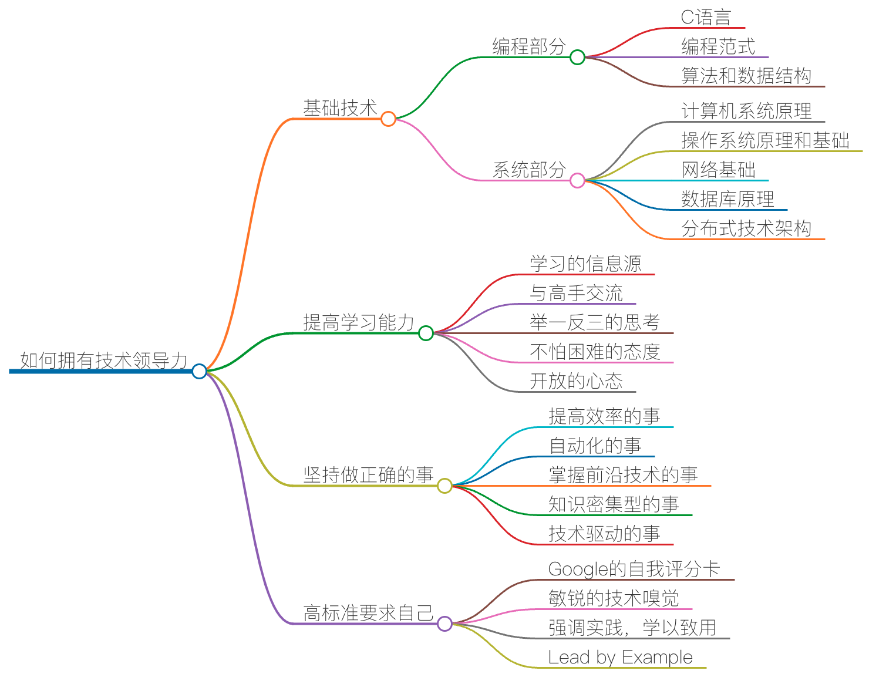
通过上节课，相信你现在已经理解了“什么才是技术领导力”。今天，我就要跟你继续聊聊，怎样才能拥有技术领导力。
第一，你要吃透基础技术。基础技术是各种上层技术共同的基础。吃透基础技术是为了更好地理解程序的运行原理，并基于这些基础技术进化出更优化的产品。吃透基础技术，有很多好处，具体来说，有如下几点。
- 万丈高楼平地起。一栋楼能盖多高，一座大桥能造多长，重要的是它们的地基。同样对于技术人员来说，基础知识越扎实，走得就会越远。
- 计算机技术太多了，但是仔细分析你会发现，只是表现形式很多，而基础技术并不多。学好基础技术，能让你一通百通，更快地使用各种新技术，从而可以更轻松地与时代同行。
- 很多分布式系统架构，以及高可用、高性能、高并发的解决方案基本都可以在基础技术上找到它们的身影。所以，学习基础技术能让你更好地掌握更高维度的技术。
那么，哪些才是基础技术呢？我在下面罗列了一些。老实说，这些技术你学起来可能会感到枯燥无味，但是，我还是鼓励你能够克服人性的弱点，努力啃完。
具体来说，可以分成两个部分：编程和系统。
编程部分
- C 语言：相对于很多其他高级语言来说，C 语言更接近底层。在具备跨平台能力的前提下，它可以比较容易地被人工翻译成相应的汇编代码。它的内存管理更为直接，可以让我们直接和内存地址打交道。
- 学习好 C 语言的好处是能掌握程序的运行情况，并能进行应用程序和操作系统编程（操作系统一般是汇编和 C 语言）。要学好 C 语言，你可以阅读 C 语言的经典书籍《C 程序设计语言（第 2 版）》，同时，肯定也要多写程序，多读一些优秀开源项目的源代码。
除了让你更为了解操作系统之外，学习 C 语言还能让你更清楚地知道程序是怎么精细控制底层资源的，比如内存管理、文件操作、网络通信……
这里需要说明的是，我们还是需要学习汇编语言的。因为如果你想更深入地了解计算机是怎么运作的，那么你是需要了解汇编语言的。虽然我们几乎不再用汇编语言编程了，但是如果你需要写一些如 lock free 之类高并发的东西，那么了解汇编语言，就能有助于你更好地理解和思考。
- 编程范式：各种编程语言都有它们各自的编程范式，用于解决各种问题。比如面向对象编程（C++、Java）、泛型编程（C++、Go、C#）、函数式编程（JavaScript、 Python、Lisp、Haskell、Erlang）等。学好编程范式，有助于培养
学好编程范式，有助于培养你的抽象思维，同时也可以提高编程效率，提高程序的结构合理性、可读性和可维护性，降低代码的冗余度，进而提高代码的运行效率。要学习编程范式，你还可以多了解各种程序设计语言的功能特性。
- 算法和数据结构：算法（及其相应的数据结构）是程序设计的有力支撑。适当地应用算法，可以有效地抽象问题，提高程序的合理性和执行效率。算法是编程中最最重要的东西，也是计算机科学中最重要的基础。
任何有技术含量的软件中一定有高级的算法和数据结构。比如 epoll 中使用了红黑树，数据库索引使用了 B+ 树……而就算是你的业务系统中，也一定使用各种排序、过滤和查找算法。学习算法不仅是为了写出运转更为高效的代码，而且更是为了能够写出可以覆盖更多场景的正确代码。
系统部分
- 计算机系统原理：CPU 的体系结构（指令集 [CISC/RISC]、分支预测、缓存结构、总线、DMA、中断、陷阱、多任务、虚拟内存、虚拟化等），内存的原理与性能特点（SRAM、DRAM、DDR-SDRAM 等），磁盘的原理（机械硬盘 [盘面、磁头臂、磁头、启停区、寻道等]、固态硬盘 [页映射、块的合并与回收算法、TRIM 指令等]），GPU 的原理等。
学习计算机系统原理的价值在于，除了能够了解计算机的原理之外，你还能举一反三地反推出高维度的分布式架构和高并发高可用的架构设计。
比如虚拟化内存就和今天云计算中的虚拟化的原理是相通的，计算机总线和分布式架构中的 ESB 也有相通之处，计算机指令调度、并发控制可以让你更好地理解并发编程和程序性能调优……这里，推荐书籍《深入理解计算机系统》（Randal E. Bryant）。
- 操作系统原理和基础：进程、进程管理、线程、线程调度、多核的缓存一致性、信号量、物理内存管理、虚拟内存管理、内存分配、文件系统、磁盘管理等。
学习操作系统的价值在于理解程序是怎样被管理的，操作系统对应用程序提供了怎样的支持，抽象出怎样的编程接口（比如 POSIX/Win32 API），性能特性如何（比如控制合理的上下文切换次数），怎样进行进程间通信（如管道、套接字、内存映射等），以便让不同的软件配合一起运行等。
要学习操作系统知识，一是要仔细观察和探索当前使用的操作系统，二是要阅读操作系统原理相关的图书，三是要阅读 API 文档（如 man pages 和 MSDN Library），并编写调用操作系统功能的程序。这里推荐三本书：《UNIX 环境高级编程》《UNIX 网络编程》和《Windows 核心编程》。
学习操作系统基础原理的好处是，这是所有程序运行的物理世界，无论上层是像 C/C++ 这样编译成机器码的语言，还是像 Java 这样有 JVM 做中间层的语言，再或者像Python/PHP/Perl/Node.js 这样直接在运行时解释的语言，其在底层都逃离不了操作系统这个物理世界的“物理定律”。
所以，了解操作系统的原理，可以让你更能从本质理解各种语言或是技术的底层原理。一眼看透本质可以让你更容易地掌握和使用高阶技术。
- 网络基础：计算机网络是现代计算机不可或缺的一部分。需要了解基本的网络层次结构（ISO/OSI 模型、TCP/IP 协议栈），包括物理层、数据链路层（包含错误重发机制）、网络层（包含路由机制）、传输层（包含连接保持机制）、会话层、表示层、应用层（在 TCP/IP 协议栈里，这三层可以并为一层）。
比如，底层的 ARP 协议、中间的 TCP/UDP 协议，以及高层的 HTTP 协议。这里推荐书籍《TCP/IP 详解》，学习这些基础的网络协议，可以为我们的高维分布式架构中的一些技术问题提供很多的技术方案。比如 TCP 的滑动窗口限流，完全可以用于分布式服务中的限流方案。
- 数据库原理：数据库管理系统是管理数据库的利器。通常操作系统提供文件系统来管理文件数据，而文件比较适合保存连续的信息，如一篇文章、一个图片等。但有时需要保存一个名字等较短的信息。如果单个文件只保存名字这样的几个字节的信息的话，就会浪费大量的磁盘空间，而且无法方便地查询（除非使用索引服务）。
但数据库则更适合保存这种短的数据，而且可以方便地按字段进行查询。现代流行的数据库管理系统有两大类：SQL（基于 B+ 树，强一致性）和 NoSQL（较弱的一致性，较高的存取效率，基于哈希表或其他技术）。
学习了数据库原理之后便能了解数据库访问性能调优的要点，以及保证并发情况下数据操作原子性的方法。要学习数据库，你可以阅读各类数据库图书，并多做数据库操作以及数据库编程，多观察分析数据库在运行时的性能。
- 分布式技术架构：数据库和应用程序服务器在应对互联网上数以亿计的访问量的时候，需要能进行横向扩展，这样才能提供足够高的性能。为了做到这一点，要学习分布式技术架构，包括负载均衡、DNS 解析、多子域名、无状态应用层、缓存层、数据库分片、容错和恢复机制、Paxos、Map/Reduce 操作、分布式 SQL 数据库一致性（以 Google Cloud Spanner 为代表）等知识点。
学习分布式技术架构的有效途径是参与到分布式项目的开发中去，并阅读相关论文。
注意，上面这些基础知识通常不是可以速成的。虽然说，你可以在一两年内看完相关的书籍或论文，但是，我想说的是，这些基础技术是需要你用一生的时间来学习的，因为基础上的技术和知识，会随着阅历和经验的增加而有不同的感悟。
第二，提高学习能力。所谓学习能力，就是能够很快地学习新技术，又能在关键技术上深入的能力。只有在掌握了上述的基础原理之上，你才能拥有好的学习能力。
下面是让你提升学习能力的一些做法。
- 学习的信息源。信息源很重要，有好的信息源就可以更快速地获取有价值的信息，并提升学习效率。常见的信息源有 Google 等搜索引擎，Stack Overflow、Quora 等社区，图书，API 文档，论文和博客等。
这么说吧，如果今天使用中文搜索就可以满足你的知识需求，那么你就远远落后于这个时代了。如果用英文搜索才能找到你想要的知识，那么你才能算跟得上这个时代。而如果说有的问题你连用英文搜索都找不到，只能到社区里去找作者或者其他人交流，那么可以说你已真正和时代同频了。
- 与高手交流。程序员可以通过技术社区以及参加技术会议与高手交流，也可以通过参加开源项目来和高手切磋。常闻“听君一席话，胜读十年书”便是如此。与高手交流对程序员的学习和成长很有益处，不仅有助于了解热门的技术方向及关键的技术点，更可以通过观察和学习高手的技术思维及解决问题的方式，提高自己的技术前瞻性和技术决策力。
我在 Amazon 的时候，就有人和我说，多和美国的 Principal SDE 以上的工程师交流，无论交流什么，你都会有收获的。其实，这里说的就是，学习这些牛人的思维方式和看问题的角度，这会让你有质的提高。
-
举一反三的思考。比如，了解了操作系统的缓存和网页缓存以后，你要思考其相同点和不同点。了解了 C++ 语言的面向对象特性以后，思考 Java 面向对象的相同点和不同点。遇到故障的时候，举一反三，把同类问题一次性地处理掉。
-
不怕困难的态度。遇到难点，有时不花一番力气，是不可能突破的。此时如果没有不怕困难的态度，你就容易打退堂鼓。但如果能坚持住，多思考，多下功夫，往往就能找到出路。绝大多数人是害怕困难的，所以，如果你能够不怕困难，并可以找到解决困难的方法和路径，时间一长，你就能拥有别人所不能拥有的能力。
-
开放的心态。实现一个目的通常有多种办法。带有开放的心态，不拘泥于一个平台、一种语言，往往能带来更多思考，也能得到更好的结果。而且，能在不同的方法和方案间做比较，比较它们的优缺点，那么你会知道在什么样的场景下用什么样的方案，你就会比一般人能够有更全面和更完整的思路。
第三，坚持做正确的事。做正确的事，比用正确的方式做事更重要，因为这样才始终会向目的地靠拢。哪些是正确的事呢？下面是我的观点：
- 提高效率的事。你要学习和掌握良好的时间管理方式，管理好自己的时间，能显著提高自己的效率。
- 自动化的事。程序员要充分利用自己的职业特质，当看见有可以自动化的步骤时，编写程序来自动化操作，可以显著提高效率。
- 掌握前沿技术的事。掌握前沿的技术，有利于拓展自己的眼界，也有利于找到更好的工作。需要注意的是，有些技术虽然当下很火，但未必前沿，而是因为它比较易学易用，或者性价比高。由于学习一门技术需要花费不少时间，你应该选择自己最感兴趣的，有的放矢地去学习。
- 知识密集型的事。知识密集型是相对于劳动密集型来说的。基本上，劳动密集型的事都能通过程序和机器来完成，而知识密集型的事却仍需要人来完成，所以人的价值此时就显现出来了。虽然现在人工智能似乎能做一些知识密集型的事（包括下围棋的 AlphaGo），但是在开放领域中相对于人的智能来说还是相去甚远。掌握了领域知识的人的价值依然很高。
- 技术驱动的事。不仅是指用程序驱动的事，而且还包括一切技术改变生活的事。比如自动驾驶、火星登陆等。就算自己一时用不着，你也要了解这些，以便将来这些技术来临时能适应它们
第四，高标准要求自己。只有不断地提高标准 ，你才可能越走越高，所以，要以高标准要求自己，不断地反思、总结和审视自己，才能够提升自己。
- Google 的自我评分卡。Google 的评分卡是在面试 Google 时，要求应聘人对自己的技能做出评估的工具，它可以看出应聘人在各个领域的技术水平。我们可以参考 Google 的这个评分卡来给自己做评估，并通过它来不断地提高对自己的要求。（该评分卡见文末附录）。
- 敏锐的技术嗅觉。这是一个相对综合的能力，你需要充分利用信息源，GET 到新的技术动态，并通过参与技术社区的讨论，丰富自己了解技术的角度。思考一下是否是自己感兴趣的，能解决哪些实际问题，以及其背后的原因，新技术也好，旧技术的重大版本变化也罢。
- 强调实践，学以致用。学习知识，一定要实际用一用，可以是工作中的项目，也可以是自己的项目，不仅有利于吸收理解，更有利于深入到技术的本质。并可以与现有技术对比一下，同样的问题，用新技术解决有什么不同，带来了哪些优势，还有哪些有待改进的地方。
- Lead by Example。永远在编程。不写代码，你就对技术细节不敏感，你无法做出可以实践的技术决策和方案。
不要小看这些方法和习惯，坚持下来很有益处。谁说下一个改进方向或者重大修改建议，不可以是你给出的呢，尤其是在一些开源项目中。何为领导力，能力体现之一不就是指明技术未来的发展方向吗？
吃透基础技术、提高学习能力、坚持做正确的事、高标准要求自己，不仅会让你全面提升技术技能，还能很好地锻炼自己的技术思维，培养技术前瞻性和决策力，进而形成技术领导力。
然而，仅有技术还不够。作为一名合格的技术领导者，还需要有解决问题的各种软技能。比如，良好的沟通能力、组织能力、驱动力、团队协作能力等等。《技术领导之路》《卓有成效的管理者》等多本经典图书中均有细致的讲解，这里不展开讲述，我后面内容也会有涉及。
附 Google 评分卡
0 - you are unfamiliar with the subject area.
1 - you can read / understand the most fundamental aspects of the subject area.
2 - ability to implement small changes, understand basic principles and able to figure out additional details with minimal help.
3 - basic proficiency in a subject area without relying on help.
4 - you are comfortable with the subject area and all routine work on it:
For software areas - ability to develop medium programs using all basic language features w/o book, awareness of more esoteric features (with book).
For systems areas - understanding of many fundamentals of networking and systems administration, ability to run a small network of systems including recovery, debugging and nontrivial troubleshooting that relies on the knowledge of internals.
5 - an even lower degree of reliance on reference materials. Deeper skills in a field or specific technology in the subject area.
6 - ability to develop large programs and systems from scratch. Understanding of low level details and internals. Ability to design / deploy most large, distributed systems from scratch.
7 - you understand and make use of most lesser known language features, technologies, and associated internals. Ability to automate significant amounts of systems administration.
8 - deep understanding of corner cases, esoteric features, protocols and systems including “theory of operation”. Demonstrated ability to design, deploy and own very critical or large infrastructure, build accompanying automation.
9 - could have written the book about the subject area but didn’t; works with standards committees on defining new standards and methodologies.
10 - wrote the book on the subject area (there actually has to be a book). Recognized industry expert in the field, might have invented it.
Subject Areas
- TCP/IP Networking (OSI stack, DNS etc)
- Unix/Linux internals
- Unix/Linux Systems administration
- Algorithms and Data Structures
- C
- C++
- Python
- Java
- Perl
- Go
- Shell Scripting (sh, Bash, ksh, csh)
- SQL and/or Database Admin
- Scripting language of your choice (not already mentioned)
- People Management
- Project Management
推荐阅读：每个程序员都该知道的知识
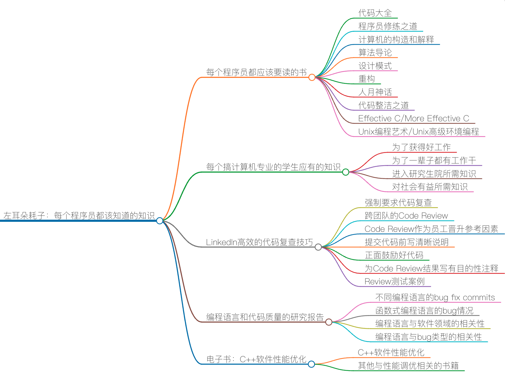
今天，我为你推荐的 5 篇文章，它们分别是：
- Stack Overflow 上推荐的一个经典书单
- 美国某大学教授给计算机专业学生的一些建议，其中有很多的学习资源
- LinkedIn 的高效代码复查实践，很不错的方法，值得你一读；
- 一份关于程序语言和 bug 数相关的有趣的报告，可以让你对各种语言有所了解；
- 最后是一本关于 C++ 性能优化的电子书。
每个程序员都应该要读的书
在 Stack Overflow 上有用户问了一个问题，大意是想让大家推荐一些每个程序员都应该阅读的最有影响力的图书。
虽然这个问题已经被关闭了，但这真是一个非常热门的话题。排在第一位的用户给出了一大串图书的列表，看上去着实吓人，不过都是一些相当经典相当有影响力的书，在这里我重新罗列一些我觉得你必须要看的。
- 《代码大全》 虽然这本书有点过时了，而且厚到可以垫显示器，但是这绝对是一本经典的书。
- 《程序员修练之道》 这本书也是相当经典，我觉得就是你的指路明灯。
- 《计算机的构造和解释》 经典中的经典，必读。
- 《算法导论》 美国的本科生教材，这本书应该也是中国计算机学生的教材。
- 《设计模式》 这本书是面向对象设计的经典书籍。
- 《重构》 代码坏味道和相应代码的最佳实践。
- 《人月神话》 这本书可能也有点过时了，但还是经典书。
- 《代码整洁之道》 细节之处的效率，完美和简单。
- 《Effective C++》/《More Effective C++》 C++ 中两本经典得不能再经典的书。也许你觉得 C++ 复杂，但这两本书中带来对代码稳定性的探索方式让人受益，因为这种思维方式同样可以用在其它地方。以至于各种模仿者，比如《Effective Java》也是一本经典书。
- 《Unix 编程艺术》《Unix 高级环境编程》也是相关的经典。
还有好多，我就不在这里一一列举了。你可以看看其它的答案，我发现自己虽然读过好多书，但同样还有好些书没有读过，这个问答对我也很有帮助。
每个搞计算机专业的学生应有的知识
What every computer science major should know，每个搞计算机专业的学生应有的知识。
本文作者马修·迈特（Matthew Might）是美国犹他大学计算机学院的副教授，2007 年于佐治亚理工学院取得博士学位。计算机专业的课程繁多，而且随着时代的变化，科目的课程组成也在不断变化。
如果不经过思考，直接套用现有的计算机专业课程列表，则有可能忽略一些将来可能变得重要的知识点。为此，马修力求从四个方面来总结，得出这篇文章的内容。
- 要获得一份好工作，学生需要知道什么？
- 为了一辈子都有工作干，学生需要知道什么？
- 学生需要知道什么，才能进入研究生院？
- 学生需要知道什么，才能对社会有益？
这篇文章不仅仅对刚毕业的学生有用，对有工作经验的人同样有用，这里我把这篇文章的内容摘要如下。
首先，对于我们每个人来说，作品集（Portfolio）会比简历（Resume）更有参考意义。所以，在自己的简历中应该放上自己的一些项目经历，或是一些开源软件的贡献，或是你完成的软件的网址等。最好有一个自己的个人网址，上面有一些你做的事、自己的技能、经历，以及你的一些文章和思考会比简历更好。
其次，计算机专业工作者也要学会与人交流的技巧，包括如何写演示文稿，以及面对质疑时如何与人辩论的能力。
最后，他就各个方面展开计算机专业人士所需要的硬技能：工程类数学、Unix 哲学和实践、系统管理、程序设计语言、离散数学、数据结构与算法、计算机体系结构、操作系统、网络、安全、密码学、软件测试、用户体验、可视化、并行计算、软件工程、形式化方法、图形学、机器人、人工智能、机器学习、数据库等等。详读本文可以了解计算机专业知识的全貌。
这篇文章的第三部分简直就是一个知识资源向导库，给出了各个技能的方向和关键知识点，你可以跟随着这篇文章里的相关链接学到很多东西。
LinkedIn 高效的代码复查技巧
LinkedIn’s Tips for Highly Effective Code Review，LinkedIn 的高效代码复查技巧。
对于 Code Review，我曾经写过一篇文章 《从 Code Review 谈如何做技术》，讲述了为什么 Code Review 是一件很重要事情。今天推荐的这篇文章是 LinkedIn 的相关实践。
这篇文章介绍了 LinkedIn 内部实践的 Code Review 形式。具体来说，LinkedIn 的代码复查有以下几个特点。
- 从 2011 年开始，强制要求在团队成员之间做代码复查。Code Review 带来的反馈意见让团队成员能够迅速提升自己的技能水平，这解决了 LinkedIn 各个团队近年来因迅速扩张带来的技能不足的问题。
- 通过建立公司范围的 Code Review 工具，这就可以做跨团队的 Code Review。既有利于消除 bug，提升质量，也有利于不同团队之间经验互通。
- Code Review 的经验作为员工晋升的参考因素之一
- Code Review 的一个难点是，Reviewer 可能不了解某块代码修改的背景和目的。所以 LinkedIn 要求代码签入版本管理系统前，就对其做清晰的说明，以便复查者了解其目的，促进 Review 的进行。
我认为，这个方法实在太赞了。因为，我看到很多时候，Reviewer 都会说不了解对方代码的背景或是代码量比较大而无法做 Code Review，然而，他们却没有找到相应的方法解决这个问题。
LinkedIn 对提交代码写说明文档这个思路是一个非常不错的方法，因为代码提交人写文档的过程其实也是重新梳理的过程。我的个人经验是，写文档的时候通常会发现自己把事儿干复杂了，应该把代码再简化一下，于是就会回头去改代码。是的，写文档就是在写代码。
- 有些 Code Review 工具所允许给出的反馈只是代码怎样修改以变得更好，但长此以往会让人觉得复查提出的意见都表示原先的代码不够好。为了提高员工积极性，LinkedIn 的代码复查工具允许提出“这段代码很棒”之类的话语，以便让好代码的作者得到鼓励。我认为，这个方法也很赞，正面鼓励的价值也不可小看。
- 为 Code Review 的结果写出有目的性的注释。比如“消除重复代码”，“增加了测试覆盖率”，等等。长此以往也让团队的价值观得以明确。
- Code Review 中，不但要 Review 提交者的代码，还要 Reivew 提交者做过的测试。除了一些单元测试，还有一些可能是手动的测试。提交者最好列出所有测试过的案例。这样可以让 Reviewer 做出更多的测试建议，从而提高质量。
- 对 Code Review 有明确的期望，不过分关注细枝末节，也不要炫技，而是对要 Review 的代码有一个明确的目标。
编程语言和代码质量的研究报告
A Large-Scale Study of Programming Languages and Code Quality in GitHub，编程语言和代码质量的研究报告。
这是一项有趣的研究。有四个人从 GitHub 上分析了 728 个项目，6300 万行代码，近 3 万个提交人，150 万次 commits，以及 17 种编程语言（如下图所示），他们想找到编程语言对软件质量的影响。
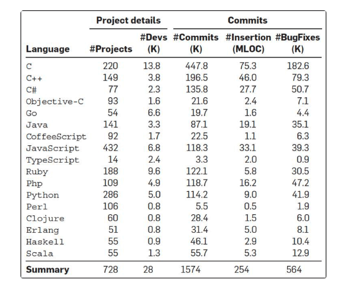
然后，他们还对编程语言做了一个分类，想找到不同类型的编程语言的 bug 问题。如下图所示：
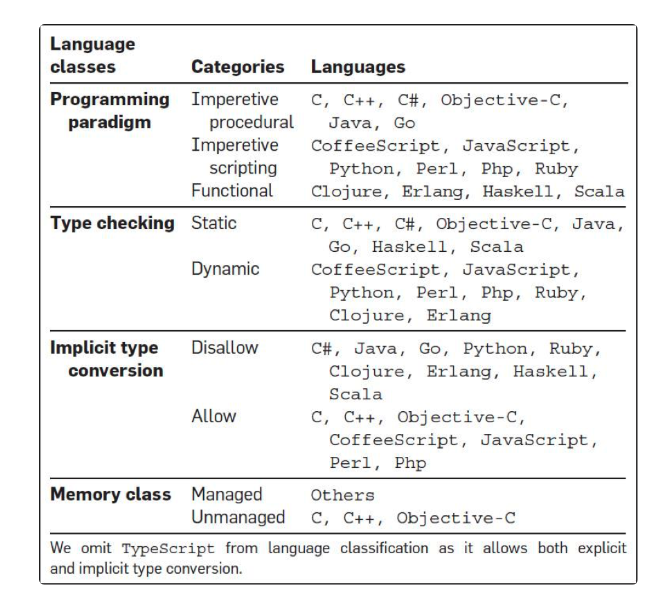
以及，他们还对这众多的开源软件做了个聚类，如下图：
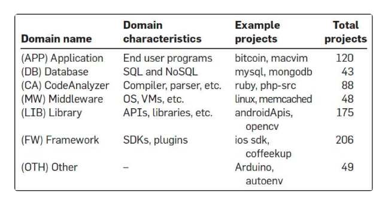
对 bug 的类型也做了一个聚类，如下图：
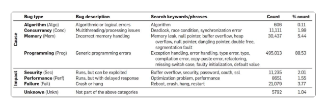
其中分析的方法我不多说了。我们来看一下相关的结果。
首先，他们得出来的第一个结果是，从查看 bug fix 的 commits 的次数情况来看，C、C++、Objective-C、PHP 和 Python 中有很多很多的 commits 都是和 bug fix 相关的，而 Clojure、Haskell、Ruby、Scala 在 bug fix 的 commits 的数上明显要少很多。
下图是各个编程语言的 bug 情况。如果你看到是正数，说明高于平均水平，如果你看到是负数，则是低于平均水平。
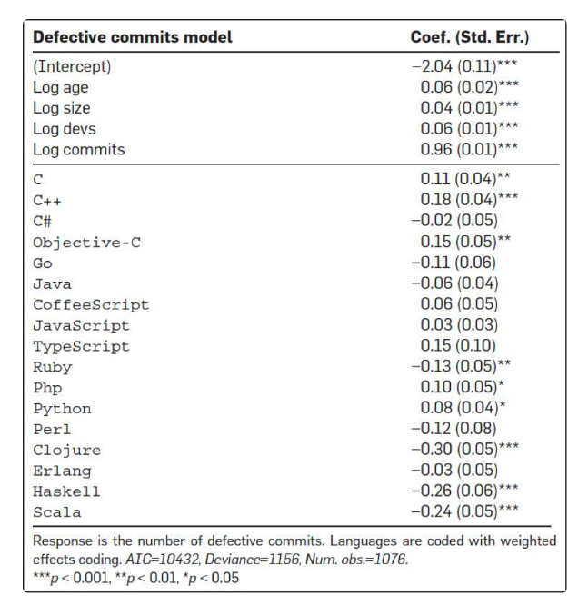
第二个结论是，函数式编程语言的 bug 明显比大多数其它语言要好很多。有隐式类型转换的语言明显产生的 bug 数要比强类型的语言要少很多。函数式的静态类型的语言要比函数式的动态类型语言的程序出 bug 的可能性要小很多
第三，研究者想搞清是否 bug 数会和软件的领域相关。比如，业务型、中间件型、框架、lib，或是数据库。研究表明，并没有什么相关性。下面这个图是各个语言在不同领域的 bug 率。
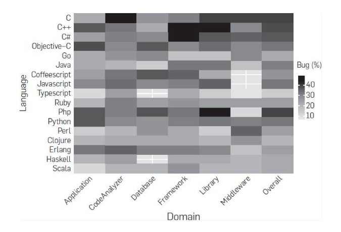
第四，研究人员想搞清楚 bug 的类型是否会和语言有关系。的确如此，bug 的类型和语言是强相关性的。下图是各个语言在不同的 bug 类型的情况。如果你看到的是正数，说明高于平均水平，如果你看到的是负数，则是低于平均水平。
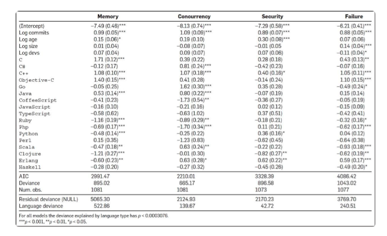
也许，这份报告可以在你评估编程语言时有一定的借鉴作用。
电子书：《C++ 软件性能优化》
Optimizing Software in C++ - Agner Fog - PDF，C++ 软件性能优化。
这本书是所有 C++ 程序员都应该要读的一本书，它事无巨细地从语言层面、编译器层面、内存访问层面、多线程层面、CPU 层面讲述了如何对软件性能调优。实在是一本经典的电子书。
Agner Fog 还写了其它几本和性能调优相关的书，你可以到这个网址下载。
- Optimizing subroutines in assembly language: An optimization guide for x86 platforms
- The microarchitecture of Intel, AMD and VIA CPUs: An optimization guide for assembly programmers and compiler makers
- Instruction tables: Lists of instruction latencies, throughputs and micro-operation breakdowns for Intel, AMD and VIA CPUs
- Calling conventions for different C++ compilers and operating systems
我今天推荐的内容比较干，都需要慢慢吸收体会，当然最好是能到实践中用用，相信这样你会有更多的感悟和收获。另外，不知道你还对哪些方面的内容感兴趣，欢迎留言给我。我后面收集推荐内容的时候，会有意识地关注整理。
Go语言，Docker和新技术
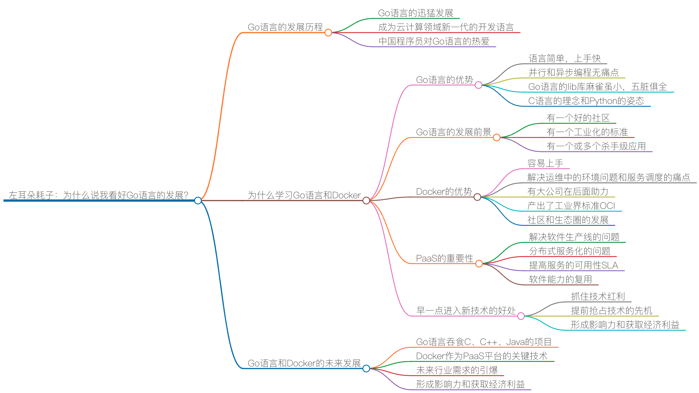
上个月，作为 Go 语言的三位创始人之一，Unix 老牌黑客罗勃·派克（Rob Pike）在新文章“Go: Ten years and climbing”中，回顾了 Go 语言的发展历程。文章提到，Go 语言这十年的迅猛发展快到连他们自己都没有想到，并且还成为了云计算领域新一代的开发语言。另外，文中还说到，中国程序员对 Go 语言的热爱完全超出了他们的想象，甚至他们都不敢相信是真的。
这让我想起我在 2015 年 5 月拜访 Docker 公司在湾区的总部时，Docker 负责人也和我表达了相似的感叹：他们完全没有想到中国居然有那么多人喜欢 Docker，而且还有这么多人在为 Docker 做贡献，这让他们感到非常意外。此外，他还对我说，中国是除了美国本土之外的另外一个如此喜欢 Docker 技术的国家，在其它国家都没有看到。
的确如他们所说，Go 语言和 Docker 这两种技术已经成为新一代的云计算技术，而且可以看到他们的发展态势非常迅猛。而中国也成为了像美国一样在强力推动这两种技术的国家。这的确是一件让人感到高兴的事儿，因为中国在跟随时代潮流这件事上已经做得相当不错了。
然而就是在这样的背景下，这几年，总还是有人会问我是否要学 Go 语言，是否要学 Docker，Go 和 Docker 能否用在生产环境等等。从这些问题来看，对于 Go 语言和 Docker 这两种技术，国内的技术圈中还有相当大的一部分人在观望。
所以，我想写这篇文章，并从两个方面来论述一下我的观点和看法。
- 一个方面，为什么 Go 语言和 Docker 会是新一代的云计算技术。
- 另一个方面，作为技术人员，我们如何识别什么样的新技术会是未来的趋势。
这两个问题是相辅相成的，所以我会把这两个问题揉在一起谈。
虽然 Go 语言是在 2009 年底开源的，但我是从 2012 年才开始接触和学习 Go 语言的。当时，我只花了一个周末两天的时间就学完了，而且在这两天的时间里，我还很快地写出了一个能完美运行的网页爬虫程序，以及一个简单的高并发文件处理服务，用于提取前面抓取的网页关键内容。这两个程序都很简单，总共不到 500 行代码。
综合下来，我对 Go 语言有如下几点体会。
第一，语言简单，上手快。Go 语言的语法特性简直是太简单了，简单到你几乎玩不出什么花招，直来直去的，学习难度很低，容易上手。
第二，并行和异步编程几乎无痛点。Go 语言的 Goroutine 和 Channel 这两个神器简直就是并发和异步编程的巨大福音。像 C、C++、Java、Python 和 JavaScript 这些语言的并发和异步的编程方式控制起来就比较复杂了，并且容易出错，但 Go 语言却用非常优雅和流畅的方式解决了这个问题。这对于编程多年受尽并发和异步折磨的我来说，完全就是眼前一亮的感觉。
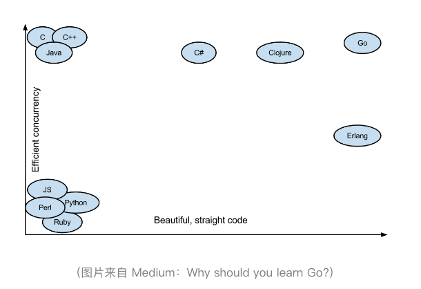
第三，Go 语言的 lib 库“麻雀虽小，五脏俱全”。Go 语言的 lib 库中基本上有绝大多数常用的库，虽然有些库还不是很好，但我觉得这都不是主要问题，因为随着技术的发展和成熟，这些问题肯定也都会随之解决。
第四，C 语言的理念和 Python 的姿态。C 语言的理念是信任程序员，保持语言的小巧，不屏蔽底层且对底层友好，关注语言的执行效率和性能。而 Python 的姿态是用尽量少的代码完成尽量多的事。于是我能够感觉到，Go 语言是想要把 C 和 Python 统一起来，这是多棒的一件事。
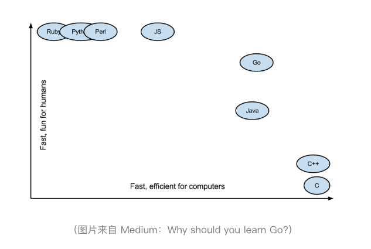
所以，即便 Go 语言存在诸多的问题，比如垃圾回收、异常处理、泛型编程等，但相较于上面这几个优势，我认为这些问题都是些小问题。于是就毫不犹豫地入坑了。
当然，一个技术能不能发展起来，关键还要看三点。
- 有没有一个比较好的社区。像 C、C++、Java、Python 和 JavaScript 的生态圈都是非常丰富和火爆的。尤其是有很多商业机构参与的社区那就更是人气爆棚了，比如 Linux 社区。
- 有没有一个工业化的标准。像 C、C++、Java 这些编程语言都是有标准化组织的。尤其是 Java，它在架构上还搞出了像 J2EE 这样的企业级标准。
- 有没有一个或多个杀手级应用。C、C++ 和 Java 的杀手级应用不用多说了，就算是对于 PHP 这样还不能算是一个优秀的编程语言来说，因为是 Linux 时代的第一个杀手级解决方案 LAMP 中的关键技术，所以，也发展起来了
在我看来，上面提到的三点至关重要，新的技术只需要占到其中一到两点就已经很不错了，何况有的技术，比如 Java 三点全都满足，所以，Java 的蓬勃发展也在情理之中。当然，除了上面这三点重要的，还有一些其它的影响因素，比如：
- 学习难度是否低，上手是否快。这点非常重要，C++ 在这点上越做越不好了。
- 有没有一个不错的提高开发效率的开发框架。如：Java 的 Spring 框架，C++ 的 STL 等。
- 是否有一个或多个巨型的技术公司作为后盾。如：Java 和 Linux 后面的 IBM、Sun……
- 有没有解决软件开发中的痛点。如：Java 解决了 C 和 C++ 的内存管理问题。
用这些标尺来衡量一下 Go 语言，我们可以清楚地看到：
- Go 语言容易上手；
- Go 语言解决了并发编程和底层应用开发效率的痛点；
- Go 语言有 Google 这个世界一流的技术公司在后面；
- Go 语言的杀手级应用是 Docker 容器，而容器的生态圈这几年可谓是发展繁荣，也是热点领域
所以，Go 语言的未来是不可限量的。当然，我个人觉得，Go 可能会吞食很多 C、C++、Java 的项目。不过，Go 语言所吞食的项目应该主要是中间层的项目，既不是非常底层也不会是业务层。
也就是说，Go 语言不会吞食底层到 C 和 C++ 那个级别的，也不会吞食到上层如 Java 业务层的项目。Go 语言能吞食的一定是 PaaS 上的项目，比如一些消息缓存中间件、服务发现、服务代理、控制系统、Agent、日志收集等等，他们没有复杂的业务场景，也到不了特别底层（如操作系统）的软件项目或工具。而 C 和 C++ 会被打到更底层，Java 会被打到更上层的业务层。这是我的一个判断。
好了，我们再用上面的标尺来衡量一下 Go 语言的杀手级应用 Docker，你会发现基本是一样的。
- Docker 容易上手。
- Docker 解决了运维中的环境问题以及服务调度的痛点。
- Docker 的生态圈中有大公司在后面助力，比如 Google。
- Docker 产出了工业界标准 OCI。
- Docker 的社区和生态圈已经出现像 Java 和 Linux 那样的态势。
所以，早在三四年前我就觉得 Docker 一定会是未来的技术。虽然当时的坑儿还很多，但是，相对于这些大的因素来说，那些小坑都不是问题。只是需要一些时间，这些小坑在未来 5-10 年就可以完全被填平了。
同样，我们可以看到 Kubernetes 作为服务和容器调度的关键技术一定会是最后的赢家。这点我在去年初就能够很明显地感觉到了。
关于 Docker 我还想多说几句，这是云计算中 PaaS 的关键技术。虽然，这世上在出现 Docker 之前，几乎所有的要玩公有 PaaS 的公司和产品都玩不起来，比如：Google 的 GAE，国内的各种 XAE，如淘宝的 TAE，新浪的 SAE 等。但我还是想说，PaaS 是一个被世界或是被产业界严重低估的平台。
PaaS 层是承上启下的关键技术，任何一个不重视 PaaS 的公司，其技术架构都不可能让这家公司成长为一个大型的公司。因为 PaaS 层的技术主要能解决下面这些问题。
- 软件生产线的问题。持续集成和持续发布，以及 DevOps 中的技术必须通过 PaaS。
- 分布式服务化的问题。分布式服务化的服务高可用、服务编排、服务调度、服务发现、服务路由，以及分布式服务化的支撑技术完全是 PaaS 的菜。
- 提高服务的可用性 SLA。提高服务可用性 SLA 所需要的分布式、高可用的技术架构和运维工具，也是 PaaS 层提供的。
- 软件能力的复用。软件工程中的核心就是软件能力的复用，这一点也完美地体现在 PaaS 平台的技术上。
老实说，这些问题的关键程度已经到了能判断一家技术驱动公司的研发能力是否靠谱的程度。没有这些技术，我认为，依托技术拓展业务的公司机会就不会很大。
在后面，我会另外写几篇文章给你详细地讲一下分布式服务化和 PaaS 平台的重要程度。
最后，我还要说一下，为什么要早一点地进入这些新技术，而不是等待这些技术成熟后再进入。原因有这么几个。
- 技术的发展过程非常重要。我进入 Go 和 Docker 的技术不能算早，但也不算晚，从 2012 年学习 Go，再到 2013 年学习 Docker 再到今天，我清楚地看到了这两种技术的生态圈发展过程。这个过程中，我收获最大的并不是这些技术本身，而是一个技术的变迁和行业的发展。
从中，我看到了非常具体的各种浪潮和思路，这些东西比起 Go 和 Docker 来说更有价值。因为，这不但让我重新思考我已掌握的技术以及如何更好地解决已有的问题，而且还让我看到了未来。我不但有了技术优势，而且这些知识还让我的技术生涯有了更多的可能性。
- 这些关键新技术，可以让你提前抢占技术的先机。这一点对一个需要技术领导力的个人或公司来说都是非常重要的。
如果一个公司或者一个人能够抓住技术红利，那就会比其它公司或个人有更大的影响力。一旦未来行业需求引爆，那么这个公司或这个人的影响力就会形成一个比较大的护城河，并可以快速地从中获取经济利益。
最近，在与中国移动、中国电信以及一些股份制银行交流的过程中，我看到通讯行业、金融行业对于 PaaS 平台的理解已经超过了互联网公司，而我近 3 年来在这些技术上的研究让我也从中受益匪浅。
所以，Go 语言和 Docker 作为 PaaS 平台的关键技术前途是无限的，我很庆幸自己赶上了这波浪潮，也很庆幸自己在 3 年前就看到了这个趋势，所以现在我也在用这些技术开发相关的技术产品，并致力于为高速成长的公司提供这些关键技术。
答疑解惑：渴望、热情和选择
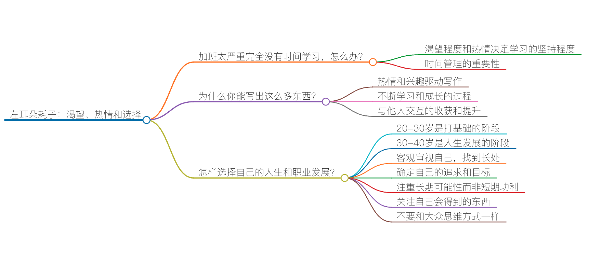
自从专栏上线以来，我陆陆续续从专栏留言、微信、微博、公开演讲等多种途径收到了一些用户的提问。在这节答疑课中，我特意挑选了其中最有代表性的三个问题来回答，希望能对你有帮助。
- 加班太严重完全没有时间学习，怎么办？
- 为什么你能写出这么多东西？
- 怎样选择自己的人生和职业发展？
加班太严重完全没有时间学习，怎么办？
过去的 7 年时间里，这个问题我已经被很多人问过无数遍了。我觉得有必要在这里统一回答一下。老实说，我真的很理解年轻人工作压力大这事儿，现在的公司加班都很厉害，尤其在大城市工作还要算上路上奔波的时间，这样一来，对于很多人来说，可能就完全没有时间学习和成长了。
但是从另外一方面，我们在通宵打游戏，追美剧，泡妞的时候，从来不会给自己找借口说时间不够。我们总是能够挤得出时间来干这些“顺人性”的事，甚至做到废寝忘食，而不找任何借口。
所以，我觉得，可能并不在于加班和工作强度大到没时间，关键看你对学习有多少的渴望程度，对要学的东西有多大的热情。这点是非常重要的，因为学习这事其实挺反人性的。反人性的事基本上都是要付出很多，而且还要坚持很久。所以，如果对学习没有渴望的话，或是不能从学习中找到快乐的话，那么其实是很难坚持的，无论你有没有时间。
说两个发生在我身上的故事供大家参考。
第一个故事，发生在 2001 年到 2002 年期间，那时我还是一个外包程序员，有一整年被当成劳动力外包进了某银行做软件开发，从早上 9 点工作到晚上 10 点，每周要从周一工作到周六。这么忙，但是我坚持每天晚上看半个小时到一个小时的书，看得不多，一天 2-3 页。一年后，我看完了两本经典书，一本是《TCP/IP 详解：卷 I》，另一本是《UNIX 环境高级编程》。
第二个故事，是在 2002 年到 2003 年的时候，我到了一家做分布式系统的公司工作。因为那里的技术比较复杂，我有点跟不上，所以，周末和节假日的时候，我都会到公司来，不是工作，而是看书学习（因为那时我是一个北漂，完全没有个人电脑，只能去蹭公司的电脑）。后来公司的物管都认识了我，甚至经常在周末和节假日的时候打电话给我，让我帮物业做点小事。比如某空调漏水，让我帮他们把接水的桶倒一下……
我真不算聪明的人，但是，我真心渴望学习。说得好听一点，我希望自己在不停地成长，不辜负这个信息化大变革的时代。说得不好听一点，我从银行出来了，很多人要看我的笑话，我不能让他们看我的笑话，所以我必须努力。我的渴望就来自这两点。
时间一定是能找得到的，关键还是看你的渴望程度和热情。只要你真心想把事儿做成，你就一定能想出各种各样的招儿来挤出时间。
在后面的课程中，我还会写一些关于时间管理的主题，敬请关注。
为什么你能够写出这么多东西？
其实，还是上面的那个问题，就是你对写作这个事有多少的兴趣和热情。
我还是先说一下，我对写东西这个事的热情是怎么来的。从 2002 年开始写东西到今天，我基本上经历了几个阶段。
第一个阶段，是学习的阶段。因为在我刚入行的时候，软件公司对文档的要求还是比较高的，干什么事都要写个文档，所以，我就有了写文档的习惯。不过，这个阶段，对于我个人来说，我会把学习到的东西都以笔记的方式记录下来，方便我以后可以翻出来看看。所以，这个阶段主要还是学习的阶段。
第二个阶段，是有利益驱动的阶段。正如《程序员如何用技术变现》这节课中提到的，因为我写的一篇技术文章，让我接到了一个培训的私活，两天时间就挣了我一个月的工资。说实话，这件事给了我很大的鼓励，让我有了更多的热情来写文章。
第三个阶段，是记录自己观点打自己脸的阶段。这个时候，我遇到了博客火爆的时代，我看到很多人写博客来记录自己的观点和想法，我也跟着写博客，记录一些自己的想法和观点。时间一长，我发现有个有趣的事——我看自己好几年前写的东西，发现要么是我以前记录的观点打了现在的脸，要么就是现在打了自己过去的脸。
这种有点科幻色彩的跨时空打自己脸的方式，让我觉得很好，因为这里面，我能够看到自己成长的过程，并且可以及时修正，这真是太好了。
第四个阶段，是与他人交互的阶段。这个阶段，我开始写一些观点鲜明，甚至看上去比较极端或是理想的文章了。而且我的文章开始有很多人转载和评论，还时不时地引发争论。我发现在这个过程中，我的收获也很大，因为一旦一件事被真正地讨论起来（而不是点赞和转发），就会有很多知识命中了我的认知盲区。虽然这会被别人批评或是指责，但是，我能从中收获到更多，因为我会从不同的观点，以及别人的批评中，让自己变得更加完善和成熟。
而且，我从写作中还能训练自己的表达能力，这让我能够更好更漂亮地与别人交流和沟通。这一点对于我们整天面对电脑的技术人员来说，太重要了。
因为我能从写作中得到这么多的好处，所以我当然就能坚持下来了。虽然，我近几年的文章更新频率比较低，但是，我还是在坚持，因为我能从中收获很多对我个人有帮助、有提升、有价值的东西。
我相信，只要你坚持下来，你一定也会有和我一样的感受。
怎样选择自己的人生和职业发展？
这也是一个我经常被问到的问题。老实说，我因为这个问题写了好多文章，比如在 CoolShell 上的《技术人员的发展之路》《算法与人生》，包括在知乎上的一些回答。不过，老实说，这个问题实在是太大了。而且不同的人有不同的想法和追求，所以，这是一个完全没有正确答案的问题。
虽然我给不出具体的答案，但是我还是可以给出一些相关的思路。希望这些思想能对你有启发，能帮助你规划和思考自己的职业或是人生。
总体来说，我把人生分为两个阶段。
- 一个是在 20-30 岁，这是打基础的阶段。在这个阶段，我们要的是开阔眼界，把基础打扎实，努力学习和成长。
- 另一个是在 30-40 岁，这是人生发展的阶段。因为整个社会一定会把社会的重担交给这群人，30-40 岁的人年富力强，既有经验又有精力，还敢想敢干，所以这群人才是整个社会的中流砥柱。在这个阶段，你需要明确自己奋斗的方向，需要做有挑战的事儿，需要提升自己的技术领导力（关于如何发展技术领导力，可以参看我在本专栏的相关文章）。
而过了 40 岁，你的事业和人生就有可能会被定型，不过这也不是绝对的。我只是想说，20-40 岁这 20 年是我们每个人最黄金的发展阶段，我们每一个人都要好好把握。
除此之外，我再从我的角度给大家一些建议。
- 客观地审视自己。找到自己的长处，不断地在自己的长处上发展自我。知道自己几斤几两才能清楚自己适合干什么。不然，目标设置得过高自己达不到，反而让自己难受。在职场上，审视自己的最佳方式，就是隔三差五就出去面试一把，看看自己在市场上能够到什么样的级别。如果你超过了身边的大多数人，你不妨选择得激进一些冒险一些，否则，还是按部就班地来吧。
- 确定自己想要什么。如果不确定这个事，你就会纠结，不知道自己要什么，也就不知道自己要去哪里。注意，你不可能什么都要，你需要极端地知道自己要什么。所谓“极端”，就是自己不会受到其它东西或其他人的影响，不会因为这条路上有人退出你会开始怀疑或者迷茫，也不会因为别的路上有人成功了，你就会羡慕。
- 注重长期的可能性，而不是短期的功利。20-30 岁应该多去经历一些有挑战的事，多去选择能给自己带来更多可能性的事。多去选择能让自己成长的事，尤其是能让自己开阔眼界的事情。人最害怕的不是自己什么都不会，而是自己不知道自己不会。
- 尽量关注自己会得到的东西，而不是自己会失去的东西。因为无论你怎么选，你都会有得有失（绝大多数人都会考虑自己会失去的，而不是考虑自己会得到的）。
- 不要和大众的思维方式一样。因为，绝大多数人都是平庸的，所以，如果你的思维方式和大众一样，这意味着你做出来的选择也会和大众一样平庸。如果你和大众不一样，那么只有两种情况，一个是你比大多数人聪明，一个是你比大多数人愚蠢。
希望我的这些思考能给你一些启发和帮助。我最近有个感慨就是，很多事情能做到什么程度，其实在思想的源头就被决定了，因为它会绝大程度地受到思考问题的出发点、思维方式、格局观、价值观等因素影响。这些才是最本源的东西，甚至可以定义成思维的“基因”。就我们程序员而言，我认为，编码能力很重要，但是技术视野、技术洞察力，以及我们如何用技术解决问题的能力更为重要。
如何成为一个大家愿意追随的Leader
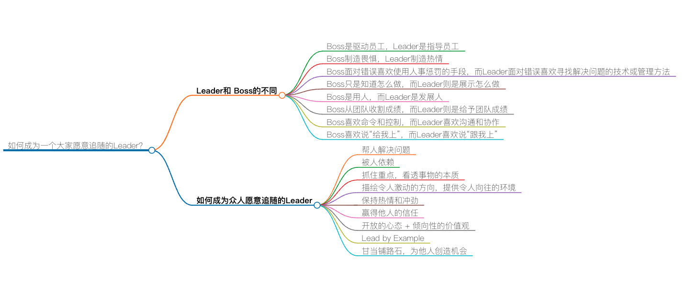
之前的课程中，我分享过技术领导力（Leadership）相关的话题，主要讨论了作为一个技术人，如何取得技术上的领先优势，而不是如何成为一个技术管理者。今天的这节课，我们着重聊聊如何成为一个大家愿意跟随的技术领导者（Leader）。注意，Leader 不是管理者，不是经理，更不是职称，而是一个领头人。
所谓领头人和经理或管理者的最大差别就是，领头人（Leader）是大家愿意追随的，而经理或管理者（Boss）则是一种行政和职位上的威慑。说白了，Leader 的影响力来自大家愿意跟随的现象，而经理或管理者的领导力来自职位和震慑，这两者是完全不同的。
Leader 和 Boss 的不同
再或者用通俗的话说，Leader 是大家跟我一起上，而 Boss 则是大家给我上，一个在团队的前面，一个在团队的后面。
具体来说，这两者的不同点如下。
- Boss 是驱动员工，Leader 是指导员工。在面对项目的时候，Boss 制定时间计划，并且推动（push）和鞭策员工完成工作，而 Leader 则是和员工一起讨论工作细节，指导员工关注工作的重点，和员工一起规划出（work out）工作的方向和计划，并且在工作中和员工一起解决细节难题，帮助员工完成工作。
- Boss 制造畏惧，Leader 制造热情。Boss 在工作中是用工作职位级别压人，用你的绩效考核来制造威慑，让员工畏惧他，从而推行工作。而 Leader 是通过描绘远景，制造激动人心的目标来鼓舞和触发团队的热情和斗志。
- Boss 面对错误喜欢使用人事惩罚的手段，而 Leader 面对错误喜欢寻找解决问题的技术或管理方法。惩罚员工和解决问题完全是两码事，Boss 因为并不懂技术也并不懂问题的细节，所以他们只能使用惩罚这样的手段，而 Leader 通常是喜欢解决问题的技术型人才，所以，他们会深入技术细节，从技术上找到既治标又治本的技术方案或管理方式。
- Boss 只是知道怎么做，而 Leader 则是展示怎么做。一个好 Leader 的最大特点就是 Lead by Example，以身作则，用身教而不是言传。而 Boss 只是在说教，总是在大道理上说得一套又一套，但从来不管技术细节。
- Boss 是用人，而 Leader 是发展人。Boss 不关心人的发展，把人当成劳动力。而 Leader 则会看到人的潜力和特长，通过授权、指导和给员工制定成长计划让员工成长，从而发展员工。所以，我们通常可以看到 Boss 总是说自己的员工有这个问题有那个问题，而 Leader 总是说，如何让员工成长以解决员工个人的各种问题。
- Boss 从团队收割成绩，而 Leader 则是给予团队成绩。Boss 通常都会把团队的成绩占为己有，虽然 Boss 会说这是团队的功劳，但基本上是一句带过。而 Leader 则是让团队成功，让团队的成员站在台前，自己甘当绿叶和铺路石。Leader 知道只有团队的每个人成功了，团队才会成功，所以，Leader 会帮助团队中的每个人更好更流畅地走向成功。
- Boss 喜欢命令和控制（ Command + Control ），而 Leader 喜欢沟通和协作（ Communication + Cooperation ）。Boss 喜欢通过命令来控制员工的行为，从而实现团队的有效运转，而 Leader 喜欢通过沟通和协作来增加员工的参与感，从而让员工觉得这是自己的事，愿意为之付出。
- Boss 喜欢说“给我上”，而 Leader 喜欢说“跟我上”。Boss 总是躲在团队后面，让团队冲锋陷阵，而 Leader 总是冲在前面用自己的行动领着团队浴血奋战。
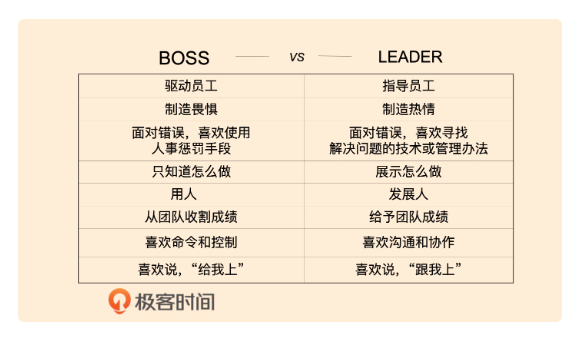
从上面这些比较，我们应该可以看到 Boss 和 Leader 的不同，相信你已经有了一些了解和认识到什么才是一个真正的 Leader，什么才是一个 Leader 应有的素质和行为。
下面，我将结合我的一些经历和经验分享一下，如何才能成为一个大家愿意追随的人。
如何成为众人愿意追随的 Leader
说白了，要成为一个大家愿意追随的人，那么你需要有以下这些“征兆”。
- 帮人解决问题。团队或身边大多数人都在问：“这个问题怎么办？”，而你总是能站出来告诉大家该怎么办。
- 被人依赖。团队或身边大多数人在做比较关键的决定时，都会来找你咨询意见和想法。
要有这样的现象，你需要有技术领导力。关于技术领导力，你可以参看本专栏主题为《如何才能拥有技术领导力？》的文章。有没有技术领导力（Leadership），是成为一个 Leader 非常关键的因素。因为人们想要跟随的人通常都是比自己强比自己出色的人，或是能够跟他学到东西，能够跟他成长的人。
但是，有了技术领导力可能并不够，作为一个 Leader，你还需要有其它的一些能力和素质。比如，和我一起共事过的人和下属，他们会把我当成他们的朋友，他们会和我交流很多在员工和老板间比较禁忌的话题，比如：
- 有猎头或是别的公司来挖我的下属，我的下属会告诉我，并会征求我的意见。除了帮他们分析利弊，有些时候，我还会帮他们准备面试。甚至，我有时候还会为我的下属介绍其它公司的工作机会。不要误会我（Don’t get me wrong），我并不是不站在公司利益的角度，我这样做完全是站在公司利益的角度。
你要知道这个世界很大，一个公司或是一个 Leader 很难做到把人一辈子留下来，因为人总是需要有不同经历的，优秀的人更是如此。既然做不到把人留一辈子，那么不妨把这件事做得漂亮一些，这样会让要离开的员工觉得这个 Leader 或是这个公司的胸怀不一般，可能是他再也碰不到的公司或 Leader，反而会想留下来，或是离开后又想回来。
- 下属会来找我分享他的难处和让他彷徨的事情，包括吐槽公司。一般来说，下属是不会找老板吐槽公司的，因为这是办公室中的禁忌。但是作为老板和经理，其实我们都知道，员工是一定会吐槽老板和公司的。既然做不到不让员工吐槽公司，那么不妨让这件事做得更漂亮一些——可以公开透明地说，而不是在背后说，因为在背后说对公司或是团队的伤害更大。
举了上面两个例子，我只是想告诉你一个 Leader 除了有技术领导力还需要有其它的素质和人格魅力。如果你的员工把这些看似禁忌的事和你分享向你倾吐，说明他们是何等信任你，何等看重你，这就说明你对他的价值已经非同寻常了，这份信任和托付对于一个 Leader 来说要小心呵护。
下面是我罗列的一些比较关键的除了技术领导力之外的一个 Leader 需要的素质。
- 赢得他人的信任。信任是人类一切活动的基础，人与人之间的关系是否好，完全都是基于信任的。对于信任来说，并不完全是别人相信你能做到某个事，还有别人愿意向你打开心扉，和你说他心里面最柔软的东西。而后者才是真正的信任。这还需要你的人格魅力，你的真诚，你的可信，你的价值观和你的情怀等诸多因素，才会让别人愿意找你分享心中的想法和情绪。
- 开放的心态 + 倾向性的价值观。这两个好像太矛盾了，其实并不是。我想说的是，对于新生事物要有开放的心态，对于每个人的观点都有开放的心态，但并不是要认同所有的观点和事情，成为一个油腔滑调的人。 也就是说，我可以听进各种不同观点，并在讨论中根据自己的价值观对不同的观点做出相应的判断，而并不是不加判断全部采用。因为如果你要做一个 Leader，你需要有明确的方向和观点，而不是说一些放之四海皆准的完全正确的废话。我的经验告诉我，对于各种各样的技术都要持一种比较开放的态度，可以讨论优缺点，但不会争个是非对错，尤其对于新技术来说，更要开放。
然而，就价值观来说，还是需要有倾向性的，比如，我就倾向于不加班的文化，倾向于全栈，倾向于按职责分工而不是按技能分工，倾向于做一个 Leader 而不是 Boss，倾向于技术是第一生产力，倾向于 OKR 而不是 KPI……
我的这些倾向性可以让别人更清楚地知道我是一个什么样的人，而不会对我琢磨不透，一会东一会西只会让人觉得你太油了，反而会产生距离感和厌恶感。我认为，倾向性的价值观是别人是否可以跟随你的一个基础。
-
Lead by Example。用自己的示例来 Lead，用自己的行为来向大家展示你的 Leadership。这就是说，你需要给大家做示范。很多时候，道理人人都知道，但未必人人都会做，知易行难，以身示范，一个示例会比讲一万遍道理都管用。 所以我认为，对于软件开发来说，不写代码的架构师是根本不靠谱的。要做一个有人愿意跟随的技术 Leader，你需要终身写代码，也就是所谓的 ABC – Always Be Coding。这样，你会得到更多的实际经验，能够非常明白一个技术方案的优缺点，实现复杂度，知道什么是 Best Practice，你的方案才会更具执行力和实践性。当有了执行力，你就会获得更多的成就，而这些成就反过来会让更多的人来跟随你。
-
保持热情和冲劲。在这个世界上，有太多太多的东西会让人产生沮丧、不满、彷徨、迷茫、疲惫等这些负面情绪，但是几乎所有的人都不会喜欢在这样的情绪中生活，我们每个人都会去追求更为积极更为正面的生活方式。 所以，作为一个 Leader 无论在什么情况下，你都需要保持热情和冲劲，只有这样，你才会让别人有跟随的想法和冲动。
但是，所谓的保持热情和冲劲，并不是自欺欺人，也不是文过饰非，因为掩耳盗铃、掩盖问题、强颜欢笑的方式根本不是热情。真正的热情和冲劲是，正视问题，正视不足，正视错误，从中进行反思和总结得到更好的解决方案，不怕困难，迎难而上。
正如鲁迅先生在《记念刘和珍君》中所说的那句话——“真的猛士，敢于直面惨淡的人生，敢于正视淋漓的鲜血”。
- 能够抓住重点，看透事物的本质。这个世界太复杂，有太多的因素和杂音影响着我们的判断和决定。绝大多数人都会在多重因素中迷失或是纠结。作为一个 Leader，能够抓住主要矛盾，看清事物的本质，给出清楚的观点或方向，简化复杂的事情，传道解惑、开启民智，让人豁然开朗、醍醐灌顶，才会让人追随之。
- 描绘令人激动的方向，提供令人向往的环境。我相信，我们每个人心中都有激动和理想，就算是被现实摧残得最凶残的人，他们已经忘却了心中那些曾经的激动和理想，但我相信也只是暂时的。一个好的 Leader 一定会把每个人心中最真善美的东西呼唤出来，并且还能让人相信这是有机会有可能做到的。
- 甘当铺路石，为他人创造机会。别人愿意跟随你，愿意和你共事，有一部分原因是你能够给别人带来更多的可能性和机会，别人觉得和你在一起能够成长，能够进步，你能够带着大家到达更远的地方。帮助别人其实就是帮助自己，成就他人其实也是在成就自己，这就像一个好的足球队一样，球队中的人都互相给队友创造机会，整个团队成功了，球队的每个人也就成功了。作为一个好的 Leader，你一定要在团队中创造好这样的文化和风气。
做一个好的 Leader 真的不容易，你需要比大家强很多，你需要比大家付出更多；你需要容天下难容之事，你还需要保持热情和朝气；你需要带领团队守护理想，你还需要直面困难迎刃而上……
也许，你不必做一个 Leader，但是如果你有想跟随的人，你应该去跟随这样的 Leader！
程序中的错误处理：错误返回码和异常捕捉
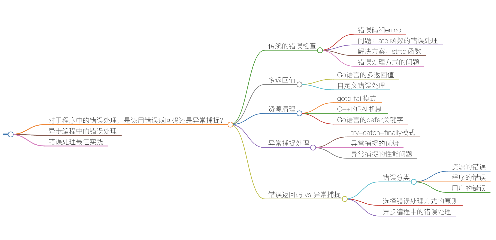
今天，我们来讨论一下程序中的错误处理。也许你会觉得这个事没什么意思，处理错误的代码并不难写。但你想过没有，要把错误处理写好，并不是件容易的事情。另外，任何一个稳定的程序中都会有大量的代码在处理错误，所以说，处理错误是程序中一件比较重要的事情。这里，我会用两节课来系统地讲一下错误处理的各种方式和相关实践。
传统的错误检查
首先，我们知道，处理错误最直接的方式是通过错误码，这也是传统的方式，在过程式语言中通常都是用这样的方式处理错误的。比如 C 语言，基本上来说，其通过函数的返回值标识是否有错，然后通过全局的errno变量并配合一个errstr的数组来告诉你为什么出错。
为什么是这样的设计？道理很简单，除了可以共用一些错误，更重要的是这其实是一种妥协。比如：read(), write(), open() 这些函数的返回值其实是返回有业务逻辑的值。也就是说，这些函数的返回值有两种语义，一种是成功的值，比如 open() 返回的文件句柄指针 FILE* ，或是错误 NULL。这样会导致调用者并不知道是什么原因出错了，需要去检查 errno 来获得出错的原因，从而可以正确地处理错误。
一般而言，这样的错误处理方式在大多数情况下是没什么问题的。但是也有例外的情况，我们来看一下下面这个 C 语言的函数：
int atoi(const char *str)
这个函数是把一个字符串转成整型。但是问题来了，如果一个要传的字符串是非法的（不是数字的格式），如"ABC"或者整型溢出了，那么这个函数应该返回什么呢？出错返回，返回什么数都不合理，因为这会和正常的结果混淆在一起。比如，返回 0，那么会和正常的对 “0” 字符的返回值完全混淆在一起。这样就无法判断出错的情况。你可能会说，是不是要检查一下 errno，按道理说应该是要去检查的，但是，我们在 C99 的规格说明书中可以看到这样的描述：
7.20.1The functions atof, atoi, atol, and atoll need not affect the value of the integer expression errno on an error. If the value of the result cannot be represented, the behavior is undefined.
像atoi(), atof(), atol() 或是 atoll() 这样的函数是不会设置 errno的，而且，还说了，如果结果无法计算的话，行为是undefined。所以，后来，libc 又给出了一个新的函数strtol()，这个函数在出错时会设置全局变量errno ：
long strtol(const char *restrict str, char **restrict endptr, int base);
于是，我们就可以这样使用：
long val = strtol(in_str, &endptr, 10); //10的意思是10进制
//如果无法转换
if (endptr == str) {
fprintf(stderr, "No digits were found\n");
exit(EXIT_FAILURE);
}
//如果整型溢出了
if ((errno == ERANGE && (val == LONG_MAX || val == LONG_MIN)) {
fprintf(stderr, "ERROR: number out of range for LONG\n");
exit(EXIT_FAILURE);
}
//如果是其它错误
if (errno != 0 && val == 0) {
perror("strtol");
exit(EXIT_FAILURE);
}
虽然，strtol() 函数解决了 atoi() 函数的问题，但是我们还是能感觉到不是很舒服和自然。
因为，这种用 返回值 + errno 的错误检查方式会有一些问题：
虽然，strtol() 函数解决了 atoi() 函数的问题，但是我们还是能感觉到不是很舒服和自然。
因为，这种用 返回值 + errno 的错误检查方式会有一些问题：
- 程序员一不小心就会忘记返回值的检查，从而造成代码的 Bug；
- 函数接口非常不纯洁，正常值和错误值混淆在一起，导致语义有问题。
所以，后来，有一些类库就开始区分这样的事情。比如，Windows 的系统调用开始使用 HRESULT 的返回来统一错误的返回值，这样可以明确函数调用时的返回值是成功还是错误。但这样一来，函数的 input 和 output 只能通过函数的参数来完成，于是出现了所谓的 入参 和 出参 这样的区别。
然而，这又使得函数接入中参数的语义变得复杂，一些参数是入参，一些参数是出参，函数接口变得复杂了一些。而且，依然没有解决函数的成功或失败可以被人为忽略的问题。
多返回值
于是，有一些语言通过多返回值来解决这个问题，比如 Go 语言。Go 语言的很多函数都会返回 result, err 两个值，于是：
- 参数上基本上就是入参，而返回接口把结果和错误分离，这样使得函数的接口语义清晰；
- 而且，Go 语言中的错误参数如果要忽略，需要显式地忽略，用 _ 这样的变量来忽略；
- 另外，因为返回的 error 是个接口（其中只有一个方法 Error()，返回一个 string ），所以你可以扩展自定义的错误处理。
比如下面这个 JSON 语法的错误：
type SyntaxError struct {
msg string // description of error
Offset int64 // error occurred after reading Offset bytes
}
func (e *SyntaxError) Error() string { return e.msg }
在使用上会是这个样子：
if err := dec.Decode(&val); err != nil {
if serr, ok := err.(*json.SyntaxError); ok {
line, col := findLine(f, serr.Offset)
return fmt.Errorf("%s:%d:%d: %v", f.Name(), line, col, err)
}
return err
}
上面这个示例来自 Go 的官方文档 《Error Handling and Go》，如果你有时间，可以点进去链接细看。
多说一句，如果一个函数返回了多个不同类型的 error，你也可以使用下面这样的方式：
if err != nil {
switch err.(type) {
case *json.SyntaxError:
...
case *ZeroDivisionError:
...
case *NullPointerError:
...
default:
...
}
}
但即便像 Go 这样的语言能让错误处理语义更清楚，而且还有可扩展性，也有其问题。如果写过一段时间的 Go 语言，你就会明白其中的痛苦—— if err != nil 这样的语句简直是写到吐，只能在 IDE 中定义一个自动写这段代码的快捷键……而且，正常的逻辑代码会被大量的错误处理打得比较凌乱。
资源清理
程序出错时需要对已分配的一些资源做清理，在传统的玩法下，每一步的错误都要去清理前面已分配好的资源。于是就出现了 goto fail 这样的错误处理模式。如下所示：
#define FREE(p) if(p) { \
free(p); \
p = NULL; \
}
main()
{
char *fname=NULL, *lname=NULL, *mname=NULL;
fname = ( char* ) calloc ( 20, sizeof(char) );
if ( fname == NULL ){
goto fail;
}
lname = ( char* ) calloc ( 20, sizeof(char) );
if ( lname == NULL ){
goto fail;
}
mname = ( char* ) calloc ( 20, sizeof(char) );
if ( mname == NULL ){
goto fail;
}
......
fail:
FREE(fname);
FREE(lname);
FREE(mname);
ReportError(ERR_NO_MEMORY);
}
这样的处理方式虽然可以，但是会有潜在的问题。最主要的一个问题就是你不能在中间的代码中有 return 语句，因为你需要清理资源。在维护这样的代码时需要格外小心，因为一不注意就会导致代码有资源泄漏的问题。
于是，C++ 的 RAII（Resource Acquisition Is Initialization）机制使用面向对象的特性可以容易地处理这个事情。RAII 其实使用 C++ 类的机制，在构造函数中分配资源，在析构函数中释放资源。下面看个例子。
我们先看一个不好的示例：
std::mutex m;
void bad()
{
m.lock(); // 请求互斥
f(); // 若f()抛异常，则互斥绝不被释放
if(!everything_ok()) return; // 提早返回，互斥绝不被释放
m.unlock(); // 若bad()抵达此语句，互斥才被释放
}
上面这个例子，在函数的第三条语句提前返回了，直接导致 m.unlock() 没有被调用，这样会引起死锁问题。我们来看一下用 RAII 的方式是怎样解决这个问题的。
//首先，先声明一个RAII类，注意其中的构造函数和析构函数
class LockGuard {
public:
LockGuard(std::mutex &m):_m(m) { m.lock(); }
~LockGuard() { m. unlock(); }
private:
std::mutex& _m;
}
//然后，我们来看一下，怎样使用的
void good()
{
LockGuard lg(m); // RAII类：构造时，互斥量请求加锁
f(); // 若f()抛异常，则释放互斥
if(!everything_ok()) return; // 提早返回，LockGuard析构时，互斥量被释放
} // 若good()正常返回，则释放互斥
在 Go 语言中，使用defer关键字也可以做到这样的效果。参看下面的示例：
func Close(c io.Closer) {
err := c.Close()
if err != nil {
log.Fatal(err)
}
}
func main() {
r, err := Open("a")
if err != nil {
log.Fatalf("error opening 'a'\n")
}
defer Close(r) // 使用defer关键字在函数退出时关闭文件。
r, err = Open("b")
if err != nil {
log.Fatalf("error opening 'b'\n")
}
defer Close(r) // 使用defer关键字在函数退出时关闭文件。
}
不知道从上面这三个例子来看，不同语言的错误处理，你自己更喜欢哪个呢？就代码的易读和干净而言，我更喜欢 C++ 的 RAII 模式，然后是 Go 的 defer 模式，最后才是 C 语言的 goto fail 模式。
异常捕捉处理
上面，我们讲了错误检查和程序出错后对资源的清理这两个事。能把这个事做得比较好的其实是 try - catch - finally 这个编程模式。
try {
... // 正常的业务代码
} catch (Exception1 e) {
... // 处理异常 Exception1 的代码
} catch (Exception2 e) {
... // 处理异常 Exception2 的代码
} finally {
... // 资源清理的代码
}
把正常的代码、错误处理的代码、资源清理的代码分门别类，看上去非常干净。
有一些人明确表示不喜欢 try - catch 这种错误处理方式，比如著名的 软件工程师Joel Spolsky。
但是，我想说一下，try - catch - finally 这样的异常处理方式有如下一些好处。
- 函数接口在 input（参数）和 output（返回值）以及错误处理的语义是比较清楚的。
- 正常逻辑的代码可以与错误处理和资源清理的代码分开，提高了代码的可读性。
- 异常不能被忽略（如果要忽略也需要 catch 住，这是显式忽略）。
- 在面向对象的语言中（如 Java），异常是个对象，所以，可以实现多态式的 catch。
与状态返回码相比，异常捕捉有一个显著的好处是，函数可以嵌套调用，或是链式调用，比如int x = add(a, div(b,c)); 或 Pizza p = PizzaBuilder().SetSize(sz) .SetPrice(p)...;。
当然，你可能会觉得异常捕捉对程序的性能是有影响的，这句话也对也不对。原因是这样的。
- 异常捕捉的确是对性能有影响的，那是因为一旦异常被抛出，函数也就跟着 return 了。而程序在执行时需要处理函数栈的上下文，这会导致性能变得很慢，尤其是函数栈比较深的时候。
- 但从另一方面来说，异常的抛出基本上表明程序的错误。程序在绝大多数情况下，应该是在没有异常的情况下运行的，所以，有异常的情况应该是少数的情况，不会影响正常处理的性能问题。
总体而言，我还是觉得 try - catch - finally 这样的方式是很不错的。而且这个方式比返回错误码在诸多方面都更好。
但是，try - catch - finally 有个致命的问题，那就是在异步运行的世界里的问题。try 语句块里的函数运行在另外一个线程中，其中抛出的异常无法在调用者的这个线程中被捕捉。这个问题就比较大了。
错误返回码 vs 异常捕捉
是返回错误状态，还是用异常捕捉的方式处理错误，可能是一个很容易引发争论的问题。有人说，对于一些偏底层的错误，比如：空指针、内存不足等，可以使用返回错误状态码的方式，而对于一些上层的业务逻辑方面的错误，可以使用异常捕捉。这么说有一定道理，因为偏底层的函数可能用得更多一些。但是我并不这么认为。
前面也比较过两者的优缺点，总体而言，似乎异常捕捉的优势更多一些。但是，我觉得应该从场景上来讨论这个事才是正确的姿势。
要讨论场景，我们需要先把要处理的错误分好类别，这样有利于简化问题。
因为，错误其实是很多的，不同的错误需要有不同的处理方式。但错误处理是有一些通用规则的。为了讲清楚这个事，我们需要把错误来分个类。我个人觉得错误可以分为三个大类。
- 资源的错误。当我们的代码去请求一些资源时导致的错误，比如打开一个没有权限的文件，写文件时出现的写错误，发送文件到网络端发现网络故障的错误，等等。这一类错误属于程序运行环境的问题。对于这类错误，有的我们可以处理，有的我们则无法处理。比如，内存耗尽、栈溢出或是一些程序运行时关键性资源不能满足等等这些情况，我们只能停止运行，甚至退出整个程序。
- 程序的错误。比如：空指针、非法参数等。这类是我们自己程序的错误，我们要记录下来，写入日志，最好触发监控系统报警。
- 用户的错误。比如：Bad Request、Bad Format 等这类由用户不合法输入带来的错误。这类错误基本上是在用户的 API 层上出现的问题。比如，解析一个 XML 或 JSON 文件，或是用户输入的字段不合法之类的。 对于这类问题，我们需要向用户端报错，让用户自己处理修正他们的输入或操作。然后，我们正常执行，但是需要做统计，统计相应的错误率，这样有利于我们改善软件或是侦测是否有恶意的用户请求。
我们可以看到，这三类错误中，有些是我们希望杜绝发生的，比如程序的 Bug，有些则是我们杜绝不了的，比如用户的输入。而对于程序运行环境中的一些错误，则是我们希望可以恢复的。也就是说，我们希望可以通过重试或是妥协的方式来解决这些环境的问题，比如重建网络连接，重新打开一个新的文件。
所以，是不是我们可以这样来在逻辑上分类：
- 对于我们并不期望会发生的事，我们可以使用异常捕捉；
- 对于我们觉得可能会发生的事，使用返回码。
比如，如果你的函数参数传入的对象不应该是一个 null 对象，那么，一旦传入 null 对象后，函数就可以抛异常，因为我们并不期望总是会发生这样的事。
而对于一个需要检查用户输入信息是否正确的事，比如：电子邮箱的格式，我们用返回码可能会好一些。所以，对于上面三种错误的类型来说，程序中的错误，可能用异常捕捉会比较合适；用户的错误，用返回码比较合适；而资源类的错误，要分情况，是用异常捕捉还是用返回值，要看这事是不应该出现的，还是经常出现的。
当然，这只是一个大致的实践原则，并不代表所有的事都需要符合这个原则。
除了用错误的分类来判断用返回码还是用异常捕捉之外，我们还要从程序设计的角度来考虑哪种情况下使用异常捕捉更好，哪种情况下使用返回码更好。
因为异常捕捉在编程上的好处比函数返回值好很多，所以很多使用异常捕捉的代码会更易读也更健壮一些。而返回码容易被忽略，所以，使用返回码的代码需要做好测试才能得到更好的软件质量。
不过，我们也要知道，在某些情况下，你只能使用其中的一个，比如：
- 在 C++ 重载操作符的情况下，你就很难使用错误返回码，只能抛异常；
- 异常捕捉只能在同步的情况下使用，在异步模式下，抛异常这事就不行了，需要通过检查子进程退出码或是回调函数来解决；
- 在分布式的情况下，调用远程服务只能看错误返回码，比如 HTTP 的返回码。
所以，在大多数情况下，我们会混用这两种报错的方式，有时候，我们还会把异常转成错误码（比如 HTTP 的 RESTful API），也会把错误码转成异常（比如对系统调用的错误）。
总之，“报错的类型”和 “错误处理”是紧密相关的，错误处理方法多种多样，而且会在不同的层面上处理错误。有些底层错误就需要自己处理掉（比如：底层模块会自动重建网络连接），而有一些错误需要更上层的业务逻辑来处理（比如：重建网络连接不成功后只能让上层业务来处理怎么办？降级使用本地缓存还是直接报错给用户？）。
所以，不同的错误类型再加上不同的错误处理会导致我们代码组织层面上的不同，从而会让我们使用不同的方式。也就是说，使用错误码还是异常捕捉主要还是看我们的错误处理流程以及代码组织怎么写会更清楚。
通过学习今天的内容，你是不是已经对如何处理程序中的错误，以及在不同情况下怎样选择错误处理方法，有了一定的认知和理解呢？然而，这些知识和经验仅在同步编程世界中适用。因为在异步编程世界里，被调用的函数是被放到另外一个线程里运行的，所以本文中的两位主角，不管是错误返回码，还是异常捕捉，都难以发挥其威力。
那么异步编程世界中是如何做错误处理的呢？我们将在下节课中讨论。同时，还会给你讲讲我在实战中总结出来的错误处理最佳实践。